СП 351.1325800.2017 «Бетонные и железобетонные конструкции из легких бетонов. Пр»
О документе: разработчики, утверждение, регистрация, ключевые слова
СВОД ПРАВИЛ
СП 351.1325800.2017
Издание официальное
Москва 2017
1 ИСПОЛНИТЕЛЬ - АО «НИЦ «Строительство» - Научно-исследовательский, проектно-конструкторский и технологический институт бетона и железобетона (НИИЖБ) им. А.А. Гвоздева
2 ВНЕСЕН Техническим комитетом по стандартизации ТК 465 «Строительство»
- 3 ПОДГОТОВЛЕН К УТВЕРЖДЕНИЮ Департаментом градостроительной деятельности и архитектуры Министерства строительства и жилищнокоммунального хозяйства Российской Федерации (Минстрой России)
- 4 УТВЕРЖДЕН приказом Министерства строительства и жилищнокоммунального хозяйства Российской Федерации от 25 ноября 2017 г. № 1584/пр и введен в действие с 26 мая 2018 г.
- 5 ЗАРЕГИСТРИРОВАН Федеральным агентством по техническому регулированию и метрологии (Росстандарт)
6 ВВЕДЕН ВПЕРВЫЕ
В случае пересмотра (замены) или отмены настоящего свода правил соответствующее уведомление будет опубликовано в установленном порядке. Соответствующая информация, уведомление и тексты размещаются также в информационной системе общего пользования -на официальном сайте разработчика (Минстрой России) в сети Интернет
© Минстрой России, 2017
УДК 666.973.3 ОКС 91.100.30
Ключевые слова: легкие бетоны, цементные вяжущие, пористый неорганический крупный заполнитель, искусственный пористый мелкий неорганический заполнитель, природный мелкий неорганический заполнитель, классификация, технические требования, правила приемки, методы контроля
Руководитель организации- разработчика АО «НИЦ «Строительство»
Заместитель генерального
директора по научной работе \_\_\_\_\_\_\_\_\_\_\_\_\_\_\_\_\_\_\_\_\_\_\_\_\_\_ А.И Звездов
Руководител ь разработки Директор
НИИЖБ им. А.А. Гвоздева \_\_\_\_\_\_\_\_\_\_\_\_\_\_\_\_\_\_\_\_\_\_\_\_\_\_ А.Н. Давидюк
Исполнители
Заведующий лабораторией № 13 НИИЖБ им. А. А. Гвоздева \_\_\_\_\_\_\_\_\_\_\_\_\_\_\_\_\_\_\_\_\_\_\_\_\_\_ В.Ф. Степанова
Ведущий научный сотрудник \_\_\_\_\_\_\_\_\_\_\_\_\_\_\_\_\_\_\_\_\_\_\_\_\_\_ В.И. Савин
Заведующий сектором лаб.№14 \_\_\_\_\_\_\_\_\_\_\_\_\_\_\_\_\_\_\_\_\_\_\_\_\_ В.Н. Строцкий
Введение
Настоящий свод правил разработан в соответствии с Федеральным законом от 30 декабря 2009 г. № 384-ФЗ «Технический регламент о безопасности зданий и сооружений».
Свод правил разработан авторским коллективом АО «НИЦ «Строительство» - НИИЖБ им. А.А. Гвоздева (руководитель работы - д-р техн. наук В.Ф. Степанова , д-р техн. наук А.Н. Давидюк, канд. техн. наук Т.А. Кузьмич, канд. техн. наук В.И. Савин , канд. техн. наук В.Н. Строцкий , канд. техн. наук С.А. Зенин , инж. С.Г. Зимин ).
1Область применения
2Нормативные ссылки
В настоящем своде правил использованы ссылки на следующие нормативные документы:
ГОСТ 8736-93 Песок для строительных работ. Технические условия
ГОСТ 13015-2012 Изделия бетонные и железобетонные для строительства. Общие технические требования. Правила приемки, маркировки, транспортирования и хранения
ГОСТ 22263-76 Щебень и песок из пористых горных пород. Технические условия
ГОСТ 25820-2014 Бетоны легкие. Технические условия
ГОСТ 27751-2014 Надежность строительных конструкций и оснований. Основные положения
ГОСТ 32496-2013 Заполнители пористые для легких бетонов. Технические условия
СП 16.13330.2017 «СНиП II-23-81 Стальные конструкции»
СП 20.13330.2016 «СНиП 2.01.07-85* Нагрузки и воздействия»
СП 28.13330.2017 «СНиП 2.03.11-85 Защита строительных конструкций от коррозии»
Правила проектирования
Concrete and reinforced concrete designs from light concrete. Rules of design
Дата введения 2018-05-26
СП 50.13330.2012 «СНиП 23-02-2003 Тепловая защита зданий»
СП 63.13330.2012 «СНиП 52-01-2003 Бетонные и железобетонные конструкции. Основные положения» (с изменениями № 1, № 2, № 3)
СП 70.13330.2012 «СНиП 3.03.01-87 Несущие и ограждающие конструкции» (с изменениями № 1, № 3)
СП 112.13330.2011 «СНиП 21-01-97* Пожарная безопасность зданий и сооружений»
СП 131.13330.2012 «СНиП 23-01-99 Строительная климатология» (с изменениями № 1, № 2)
Примечание - При пользовании настоящим сводом правил целесообразно проверить действие ссылочных документов в информационной системе общего пользования -на официальном сайте федерального органа исполнительной власти в сфере стандартизации в сети Интернет или по ежегодному информационному указателю «Национальные стандарты», который опубликован по состоянию на 1 января текущего года, и по выпускам ежемесячного информационного указателя «Национальные стандарты» за текущий год. Если заменен ссылочный документ, на который дана недатированная ссылка, то рекомендуется использовать действующую версию этого документа с учетом всех внесенных в данную версию изменений. Если заменен ссылочный документ, на который дана датированная ссылка, то рекомендуется использовать версию этого документа с указанным выше годом утверждения (принятия). Если после утверждения настоящего свода правил в ссылочный документ, на который дана датированная ссылка, внесено изменение, затрагивающее положение, на которое дана ссылка, то это положение рекомендуется применять без учета данного изменения. Если ссылочный документ отменен без замены, то положение, в котором дана ссылка на него, рекомендуется применять в части, не затрагивающей эту ссылку. Сведения о действии сводов правил целесообразно проверить в Федеральном информационном фонде стандартов.
3Термины и определения
В настоящем своде правил применены термины и определения по ГОСТ 25820, ГОСТ 27751, СП 63.13330 и другим нормативным документам.
4Общие указания
- применения эффективных строительных материалов и конструкций;
- снижения веса конструкций;
- наиболее полного использования физико-механических свойств материалов;
- применения местных строительных материалов;
- соблюдения требований по экономному расходованию основных строительных материалов.
Целесообразно укрупнять элементы сборных конструкций, насколько это позволяют грузоподъемность монтажных механизмов, условия изготовления и транспортирования.
Конструкции узлов и соединений элементов должны обеспечивать надежную передачу усилий, прочность самих элементов в зоне стыка, а также связь дополнительно уложенного бетона в стыке с бетоном конструкции с помощью различных конструктивных и технологических мероприятий.
- преимущественно в конструкциях, работающих на сжатие при эксцентриситетах продольной силы, не превышающих значений, указанных в 7.1.2;
- в отдельных случаях в конструкциях, работающих на сжатие с большими эксцентриситетами, а также в изгибаемых конструкциях, когда их разрушение не представляет непосредственной опасности для жизни людей и сохранности оборудования (элементы, лежащие на сплошном основании и др.).
Влажность воздуха окружающей среды определяется как средняя относительная влажность наружного воздуха наиболее жаркого месяца в зависимости от района строительства согласно СП 131.13330 или как относительная влажность внутреннего воздуха помещений отапливаемых зданий.
5Требования к расчету бетонных и железобетонных конструкций
Расчетом по предельным состояниям первой группы должна быть исключена возможность:
- хрупкого, вязкого или иного характера разрушения (расчет по прочности с учетом, в необходимых случаях, прогиба конструкции перед разрушением);
- потери устойчивости формы конструкции (расчет на устойчивость тонкостенных конструкций и т. д.) или ее положения (расчет на опрокидывание и скольжение подпорных стен; расчет на всплывание заглубленных или подземных резервуаров, насосных станций и т. п.);
- усталостного разрушения (расчет на выносливость конструкций, находящихся под воздействием многократно повторяющейся нагрузки подвижной или пульсирующей: подкрановых балок, шпал, рамных фундаментов, перекрытий и т. п.);
- разрушения под совместным воздействием силовых факторов и неблагоприятных влияний внешней среды (периодического или постоянного воздействия агрессивной среды, действия попеременного замораживания и оттаивания, воздействия пожара и т. п.).
Расчетом по предельным состояниям второй группы должна быть исключена возможность:
- образования трещин, а также их чрезмерного или продолжительного раскрытия (если по условиям эксплуатации образование или продолжительное раскрытие трещин недопустимо);
- чрезмерных перемещений (прогибов, углов перекоса и поворота, колебаний).
Расчет по раскрытию трещин и по деформациям допускается не производить, если на основании опытной проверки или практики применения железобетонных конструкций установлено, что раскрытие в них трещин не превышает допустимых значений и жесткость конструкций в стадии эксплуатации достаточна.
Значения нагрузок необходимо умножать на коэффициенты надежности по назначению, принимаемые согласно СП 20.13330.
Нагрузки, учитываемые при расчете по предельным состояниям второй группы (эксплуатационные) в соответствии с СП 20.13330, принимаются равными единице, если при проектировании конструкций не установлены другие значения.
В соответствии с СП 20.13330 для конструкций, не защищенных от суточных и сезонных изменений температуры, следует учитывать изменение во времени средней температуры и перепад температуры по сечению элемента, за исключением случаев, предусмотренных проектом. Для конструкций, защищенных от суточных и сезонных изменений температуры, температурные климатические воздействия не учитываются.
Огнестойкость бетонных и железобетонных конструкций должна быть обеспечена в соответствии с СП 112.13330.
- 1,6 - при транспортировании
- 1,4 - при подъеме и монтаже
Для указанных коэффициентов динамичности допускается принимать более низкие значения, обоснованные в установленном порядке, но не ниже 1,25.
- на воздействие веса бетона и других нагрузок, действующих при возведении конструкции, до приобретения бетоном заданной прочности;
- на нагрузки, действующие при возведении и при эксплуатации конструкции, после приобретения бетоном заданной прочности
Для конструкций, методика расчета которых с учетом неупругих свойств железобетона не разработана, и для промежуточных стадий расчета с учетом неупругих свойств железобетона усилия допускается определять в предположении их линейной упругости.
Для элементов статически неопределимых конструкций значение эксцентриситета продольной силы относительно центра тяжести приведенного сечения е 0 принимается равным эксцентриситету, полученному из статического расчета конструкции, но не менее е 0. В элементах статически определимых конструкций эксцентриситет е 0 находится как сумма эксцентриситетов - определяемого из статического расчета конструкции и случайного эксцентриситета.
6Материалы для бетонных и железобетонных конструкций
6.1Бетон
- плотной структуры средней плотностью от 400 до 2000 кг/м³ включительно;
- поризованной структуры средней плотностью от 300 до 1400 кг/м³ .
- класс по прочности на сжатие В;
- класс по прочности на осевое растяжение В t ;
- марка по средней плотности D;
- марка по морозостойкости F;
- марка по водонепроницаемости W.
При необходимости устанавливают дополнительные показатели качества бетона, связанные с теплопроводностью, температуростойкостью, огнестойкостью, коррозионной стойкостью (как самого бетона, так и находящейся в нем арматуры), биологической и радиационной защитой и с другими требованиями, предъявляемыми к конструкции (СП 28.13330, СП 50.13330, СП 112.13330).
Нормируемые показатели качества бетона должны быть обеспечены соответствующим проектированием состава бетонной смеси (на основе характеристик материалов для бетона и требований к бетону), технологией приготовления бетонной смеси и производства бетонных работ при изготовлении бетонных и железобетонных изделий и возведении монолитных конструкций. Нормируемые показатели качества бетона должна контролироваться как в процессе производства работ, так и непосредственно при изготовлении изделий.
Необходимые нормируемые показатели качества бетона следует устанавливать при проектировании бетонных и железобетонных конструкций в соответствии с расчетом и условиями изготовления и эксплуатации конструкций с учетом различных воздействий окружающей среды и защитных свойств бетона по отношению к принятому виду арматуры.
6.1.3. Для бетонных и железобетонных конструкций следует предусматривать бетоны классов и марок, приведенных в таблице 6.1.
Таблица 6.1
| Вид бетона | Вид бетона | Класс по прочности на сжатие |
|---|---|---|
| 1 Бетон плотной структуры марок по средней плотности | D400, D500 | B1; В1,5; В2,5; В3,5 |
| 1 Бетон плотной структуры марок по средней плотности | D600, D700 | В1,5; B2,5; В3,5; В5 |
| 1 Бетон плотной структуры марок по средней плотности | D800, D900 | В2,5; В3,5; В5; В7,5 |
| 1 Бетон плотной структуры марок по средней плотности | D1000, D1100 | В2,5; В3,5; В5; В7,5; В10; В12,5 |
| 1 Бетон плотной структуры марок по средней плотности | D1200, D1300 | В2,5; В3,5; В5; В7,5; В10; В12,5; В15; B20 |
| 1 Бетон плотной структуры марок по средней плотности | D1400, D1500 | В3,5; В5; В7,5; В10; В12,5; В15; В20; В25; В30 |
| 1 Бетон плотной структуры марок по средней плотности | D1600, D1700 | В7,5; В10; В12,5; В15; В20; В25; В30; В40 |
| 1 Бетон плотной структуры марок по средней плотности | D1800, D1900 | В5; В7,5; В10; В12,5; В15; В20; В25; В30; В35; В40 |
| 1 Бетон плотной структуры марок по средней плотности | D2000 | В25; В30; В35; В40 |
| 2 Бетон поризованной структуры морок по средней плотности | D300, D400 | B1; B1,5; B2,5 |
| 2 Бетон поризованной структуры морок по средней плотности | D500, D600 | B1,5; B2,5; В3,5 |
| 2 Бетон поризованной структуры морок по средней плотности | D700, D800 | В1,5; В2,5; В3,5; В5 |
| 2 Бетон поризованной структуры морок по средней плотности | D900, D1000 | В2,5; В3,5; В5; В7,5 |
| 2 Бетон поризованной структуры морок по средней плотности | D1100, D1200 | В3,5; В5; В7,5; В10 |
| 2 Бетон поризованной структуры морок по средней плотности | D1300, D1400 | В5; В7,5; В10; В12,5 |
| 3 Бетон плотной структуры марок по средней плотности на пористом заполнителе марки по прочности П400-П600 | D1400, D1500 | В20; В25; В30 |
| 3 Бетон плотной структуры марок по средней плотности на пористом заполнителе марки по прочности П400-П600 | D1600, D1700 | В25; В30; В35; В40; В45 |
| 3 Бетон плотной структуры марок по средней плотности на пористом заполнителе марки по прочности П400-П600 | D1800, D1900 | В25; В30; В35; В40; В45; В50; В55; B60 |
| 3 Бетон плотной структуры марок по средней плотности на пористом заполнителе марки по прочности П400-П600 | D2000 | В30; В35; В40; В45; В50; В55; В60 |
- классов по прочности на осевое растяжение: B t 0,4; B t 0,8; B t 1,2; B t 1,6; B t 2; B t 2,4; B t 2,8; B t 3,2;
- марок по морозостойкости: F125; F135; F150; F175; F1100; F1150; F1200; F1300; F1400; F1500;
- марок по водонепроницаемости: W2; W4; W6; W8; W10; W12.
Значения нормируемых отпускной и передаточной прочности бетона в элементах сборных изделий следует назначать в соответствии с ГОСТ 13015 и нормативными документами (НД) на изделия конкретных видов, для монолитных конструкций - по СП 70.13330.
- бетон класса по прочности на сжатие ниже В2,5 - для однослойных и ниже В1 - для двухслойных и трехслойных конструкций.
Рекомендуется принимать класс бетона по прочности на сжатие:
- не ниже В15 - для железобетонных элементов из бетонов плотной структуры, рассчитываемых на воздействие многократно повторяющейся нагрузки;
- не ниже В15 - для железобетонных сжатых стержневых элементов из бетонов плотной структуры;
- не ниже В25 - для сильнонагруженных железобетонных сжатых стержневых элементов (например, для колонн, воспринимающих значительные крановые нагрузки, и для колонн нижних этажей многоэтажных зданий).
Таблица 6.2
| Вид и класс напрягаемой арматуры | Класс бетона, не ниже |
|---|---|
| 1 Проволочная арматура классов: Вр1200 (при наличии анкеров) | В20 |
| Вр1600 (без анкеров) диаметром, мм: до 5 включ. | В20 |
| 6 и более | В30 |
| К1400, К1500, К1600, К1700 | В30 |
| 2 Стержневая арматура (без анкеров) диаметром, мм: от 10 до 18 включ., классов: А-600 | В15 |
| A-800 | В20 |
| A-1000 | В30 |
| 20 и более, классов: A-600 | В20 |
| A-800 | В25 |
| A-1000 | В30 |
Примечания
1 При расчете железобетонных конструкций в стадии предварительного обжатия расчетные характеристики бетона принимаются как для класса бетона, численно равного передаточной прочности бетона (по линейной интерполяции).
2 При проектировании ограждающих однослойных сплошных конструкций, выполняющих функции теплоизоляции, допускается применять напрягаемую арматуру класса А600 диаметром не более 14 мм при классах бетона В7,5-В12,5, при относительном значении обжатия бетона σ bp / Rbp не более 0,30, передаточная прочность бетона Rbp при этом должна составлять не менее 80% класса бетона.
3 При стержневой арматуре класса А1000 или арматурных канатах классов К1400-К1700 значения передаточной прочности бетона Rbp принимают не менее 11 МПа, но не менее 50% принятого класса бетона.
- 4 При проволочной арматуре без высаженных головок значение передаточной прочности бетона должно быть не менее 15,5 МПа.
- 5 При проектировании железобетонных конструкций с применением проволочной напрягаемой арматуры и стержневой напрягаемой арматуры класса А600 независимо от диаметра или класса А800 диаметром 10 - 18 мм, рассчитываемых на воздействие многократно повторяющейся нагрузки, класс бетона по прочности на сжатие повышается на одну ступень с соответствующим повышением передаточной прочности.
- 6 При проектировании конструкций конкретных видов допускается установленное расчетом снижение класса бетона и передаточной прочности, приведенных в настоящей таблице.
Для надземных конструкций, подвергаемых атмосферным воздействиям окружающей среды при расчетной отрицательной температуре наружного воздуха в холодный период от минус 5 °C до минус 40 °C, принимают марку бетона по морозостойкости не ниже F175. При расчетной температуре наружного воздуха выше минус 5 °C для надземных конструкций марку бетона по морозостойкости не нормируют.
- сопротивления бетона осевому сжатию Rb,n ;
- сопротивления бетона осевому растяжению Rbt,n .
Нормативные значения сопротивления бетона осевому сжатию (призменная прочность) и осевому растяжению принимают, в зависимости от класса бетона по прочности B, по таблице 6.3.
Расчетные значения сопротивления бетона Rb , Rbt , Rb,ser , Rbt,ser (с округлением) в зависимости от класса бетона по прочности на сжатие и осевое растяжение приведены: в таблицах 6.4 и 6.5 для предельных состояний первой группы, в таблице 6.3 - второй группы.
Расчетные значения сопротивления бетона для предельных состояний первой группы Rb и Rbt снижаются (или повышаются) путем умножения на коэффициенты условий работы бетона γ bi , учитывающие особенности свойств бетона, длительность действия, многократную повторяемость нагрузки, условия и стадию работы конструкции, способ ее изготовления, размеры сечения и т. п. Значения коэффициентов условий работы γ bi приведены в приложении Б.
Расчетные значения сопротивления бетона для предельных состояний второй группы Rb,ser и Rbt,ser вводят в расчет с коэффициентом условий работы бетона γ bi =1,0. Для отдельных видов бетонов допускается принимать иные значения расчетных сопротивлений, согласованные в установленном порядке.
При использовании в расчетах промежуточных классов бетона по прочности на сжатие согласно 6.1.3, значения характеристик, приведенных в таблицах 6.2, 6.3 и 6.7, принимаются по линейной интерполяции.
- предельные относительные деформации бетона при осевом сжатии и растяжении (при однородном напряженном состоянии бетона) ε b 0 и ε bt 0 ;
- начальный модуль упругости Еb;
- модуль сдвига G ;
- коэффициент (характеристика) ползучести φ b,cr ;
- коэффициент поперечной деформации бетона (коэффициент Пуассона) ν b,P ;
- коэффициент линейной температурной деформации бетона α bt .
При наличии данных о качестве материалов, составах бетона, условиях изготовления (например, центрифугированный бетон) и т. д. допускается принимать другие значения Еb , согласованные в установленном порядке.
- 1∙10 -5 °C -1 - для бетона при мелком плотном заполнителе;
- 0,8∙10 -5 °С -1 - для бетона при мелком пористом заполнителе;
- 0,9∙10 -5 °C -1 - для бетона поризованной структуры.
Абсцисса вершины диаграммы осевого сжатия бетона определяют по формуле
где B - класс бетона по прочности на сжатие;
Eb - модуль упругости при сжатии; λ - безразмерный коэффициент, принимаемый равным
где D - средняя плотность бетона, кг/м³ .
Таблица 6.3
| Вид сопро- тивления | Вид бетона | Нормативные сопротивления бетона R b,n , R bt,n и расчетные сопротивления бетона для предельных состояний второй группы R b,ser и R bt,ser при классе бетона по прочности на сжатие, МПа | Нормативные сопротивления бетона R b,n , R bt,n и расчетные сопротивления бетона для предельных состояний второй группы R b,ser и R bt,ser при классе бетона по прочности на сжатие, МПа | Нормативные сопротивления бетона R b,n , R bt,n и расчетные сопротивления бетона для предельных состояний второй группы R b,ser и R bt,ser при классе бетона по прочности на сжатие, МПа | Нормативные сопротивления бетона R b,n , R bt,n и расчетные сопротивления бетона для предельных состояний второй группы R b,ser и R bt,ser при классе бетона по прочности на сжатие, МПа | Нормативные сопротивления бетона R b,n , R bt,n и расчетные сопротивления бетона для предельных состояний второй группы R b,ser и R bt,ser при классе бетона по прочности на сжатие, МПа | Нормативные сопротивления бетона R b,n , R bt,n и расчетные сопротивления бетона для предельных состояний второй группы R b,ser и R bt,ser при классе бетона по прочности на сжатие, МПа | Нормативные сопротивления бетона R b,n , R bt,n и расчетные сопротивления бетона для предельных состояний второй группы R b,ser и R bt,ser при классе бетона по прочности на сжатие, МПа | Нормативные сопротивления бетона R b,n , R bt,n и расчетные сопротивления бетона для предельных состояний второй группы R b,ser и R bt,ser при классе бетона по прочности на сжатие, МПа | Нормативные сопротивления бетона R b,n , R bt,n и расчетные сопротивления бетона для предельных состояний второй группы R b,ser и R bt,ser при классе бетона по прочности на сжатие, МПа | Нормативные сопротивления бетона R b,n , R bt,n и расчетные сопротивления бетона для предельных состояний второй группы R b,ser и R bt,ser при классе бетона по прочности на сжатие, МПа | Нормативные сопротивления бетона R b,n , R bt,n и расчетные сопротивления бетона для предельных состояний второй группы R b,ser и R bt,ser при классе бетона по прочности на сжатие, МПа | Нормативные сопротивления бетона R b,n , R bt,n и расчетные сопротивления бетона для предельных состояний второй группы R b,ser и R bt,ser при классе бетона по прочности на сжатие, МПа | Нормативные сопротивления бетона R b,n , R bt,n и расчетные сопротивления бетона для предельных состояний второй группы R b,ser и R bt,ser при классе бетона по прочности на сжатие, МПа | Нормативные сопротивления бетона R b,n , R bt,n и расчетные сопротивления бетона для предельных состояний второй группы R b,ser и R bt,ser при классе бетона по прочности на сжатие, МПа | Нормативные сопротивления бетона R b,n , R bt,n и расчетные сопротивления бетона для предельных состояний второй группы R b,ser и R bt,ser при классе бетона по прочности на сжатие, МПа | Нормативные сопротивления бетона R b,n , R bt,n и расчетные сопротивления бетона для предельных состояний второй группы R b,ser и R bt,ser при классе бетона по прочности на сжатие, МПа | Нормативные сопротивления бетона R b,n , R bt,n и расчетные сопротивления бетона для предельных состояний второй группы R b,ser и R bt,ser при классе бетона по прочности на сжатие, МПа | Нормативные сопротивления бетона R b,n , R bt,n и расчетные сопротивления бетона для предельных состояний второй группы R b,ser и R bt,ser при классе бетона по прочности на сжатие, МПа | Нормативные сопротивления бетона R b,n , R bt,n и расчетные сопротивления бетона для предельных состояний второй группы R b,ser и R bt,ser при классе бетона по прочности на сжатие, МПа |
|---|---|---|---|---|---|---|---|---|---|---|---|---|---|---|---|---|---|---|---|---|
| Вид сопро- тивления | Вид бетона | В1 | В1,5 | В2 | В2,5 | В3,5 | В5 | В7,5 | В10 | В12,5 | В15 | В20 | В25 | В30 | В35 | В40 | В45 | В50 | В55 | В60 |
| Сжатие осевое (призменная прочность) R bn и R b,ser | Бетон плотной структуры | 0,8 | 1,2 | 1,6 | 1,9 | 2,7 | 3,5 | 5,5 | 7,5 | 9,5 | 11,0 | 15,0 | 18,5 | 22,0 | 25,5 | 29,0 | - | - | - | - |
| Сжатие осевое (призменная прочность) R bn и R b,ser | Бетон плотной структуры на пористом заполнителе марки по прочности П400-П600 | - | - | - | - | - | - | - | - | - | - | - | - | - | - | - | 32,5 | 36,0 | 39,5 | 43,0 |
| Растяжение осевое R btn и R bt,ser | Бетон плотной структуры при мелком заполнителе: плотном пористом | - 0,09 | - 0,14 | - 0,21 | 0,29 0,29 | 0,39 0,39 | 0,55 0,55 | 0,70 0,70 | 0,85 0,85 | 1,00 1,00 | 1,15 1,10 | 1,40 1,20 | 1,60 1,35 | 1,80 1,50 | 1,95 1,65 | 2,10 1,80 | - - | - - | - - | - - |
| Растяжение осевое R btn и R bt,ser | Бетон плотной структуры на пористом заполнителе марки по прочности П400-П600 | - | - | - | - | - | - | - | - | - | - | - | - | - | - | - | 2,3 | 2,4 | 2,55 | 2,65 |
| Примечание - Для бетонов поризованной структуры и керамзитоперлитобетона на вспученном перлитовом песке значения R btn и R bt,ser принимают, как для легкого бетона на |
Таблица 6.4
| Вид сопро- тивления | Вид бетона | Расчетные сопротивления бетона для предельных состояний первой группы R b и R bt при классе бетона по прочности на сжатие, МПа | Расчетные сопротивления бетона для предельных состояний первой группы R b и R bt при классе бетона по прочности на сжатие, МПа | Расчетные сопротивления бетона для предельных состояний первой группы R b и R bt при классе бетона по прочности на сжатие, МПа | Расчетные сопротивления бетона для предельных состояний первой группы R b и R bt при классе бетона по прочности на сжатие, МПа | Расчетные сопротивления бетона для предельных состояний первой группы R b и R bt при классе бетона по прочности на сжатие, МПа | Расчетные сопротивления бетона для предельных состояний первой группы R b и R bt при классе бетона по прочности на сжатие, МПа | Расчетные сопротивления бетона для предельных состояний первой группы R b и R bt при классе бетона по прочности на сжатие, МПа | Расчетные сопротивления бетона для предельных состояний первой группы R b и R bt при классе бетона по прочности на сжатие, МПа | Расчетные сопротивления бетона для предельных состояний первой группы R b и R bt при классе бетона по прочности на сжатие, МПа | Расчетные сопротивления бетона для предельных состояний первой группы R b и R bt при классе бетона по прочности на сжатие, МПа | Расчетные сопротивления бетона для предельных состояний первой группы R b и R bt при классе бетона по прочности на сжатие, МПа | Расчетные сопротивления бетона для предельных состояний первой группы R b и R bt при классе бетона по прочности на сжатие, МПа | Расчетные сопротивления бетона для предельных состояний первой группы R b и R bt при классе бетона по прочности на сжатие, МПа | Расчетные сопротивления бетона для предельных состояний первой группы R b и R bt при классе бетона по прочности на сжатие, МПа | Расчетные сопротивления бетона для предельных состояний первой группы R b и R bt при классе бетона по прочности на сжатие, МПа | Расчетные сопротивления бетона для предельных состояний первой группы R b и R bt при классе бетона по прочности на сжатие, МПа | Расчетные сопротивления бетона для предельных состояний первой группы R b и R bt при классе бетона по прочности на сжатие, МПа | Расчетные сопротивления бетона для предельных состояний первой группы R b и R bt при классе бетона по прочности на сжатие, МПа | Расчетные сопротивления бетона для предельных состояний первой группы R b и R bt при классе бетона по прочности на сжатие, МПа |
|---|---|---|---|---|---|---|---|---|---|---|---|---|---|---|---|---|---|---|---|---|
| Вид сопро- тивления | Вид бетона | В1 | В1,5 | В2 | В2,5 | В3,5 | В5 | В7,5 | В10 | В12,5 | В15 | В20 | В25 | В30 | В35 | В40 | В45 | В50 | В55 | В60 |
| Сжатие осевое (призменная прочность) R b | Бетон плотной структуры | 0,6 | 0,9 | 1,2 | 1,5 | 2,1 | 2,8 | 4,5 | 6,0 | 7,5 | 8,5 | 11,5 | 14,5 | 17,0 | 19,5 | 22,0 | - | - | - | - |
| Сжатие осевое (призменная прочность) R b | Бетон плотной структуры на пористом заполнителе марки по прочности П400-П600 | - | - | - | - | - | - | - | - | - | - | - | - | - | - | - | 24,7 | 27,4 | 30,0 | 32,7 |
| Бетон плотной структуры на мелком заполнителе: плотном пористом | - 0,08 | - 0,12 | - 0,16 | 0,20 0,20 | 0,26 0,26 | 0,37 0,37 | 0,48 0,48 | 0,57 0,57 | 0,66 0,66 | 0,75 0,74 | 0,90 0,80 | 1,05 0,90 | 1,20 1,00 | 1,30 1,10 | 1,40 1,20 | - - | - - | - - | - - | |
| Бетон плотной структуры на пористом заполнителе марки по прочности П400-П600 | - | - | - | - | - | - | - | - | - | - | - | - | - | - | - | 1,54 | 1,60 | 1,70 | 1,80 |
Таблица 6.6
| Бетон | Начальные модули упругости бетона при сжатии и растяжении Е b ·10 -3 , МПа, при классе бетона | Начальные модули упругости бетона при сжатии и растяжении Е b ·10 -3 , МПа, при классе бетона | Начальные модули упругости бетона при сжатии и растяжении Е b ·10 -3 , МПа, при классе бетона | Начальные модули упругости бетона при сжатии и растяжении Е b ·10 -3 , МПа, при классе бетона | Начальные модули упругости бетона при сжатии и растяжении Е b ·10 -3 , МПа, при классе бетона | Начальные модули упругости бетона при сжатии и растяжении Е b ·10 -3 , МПа, при классе бетона | Начальные модули упругости бетона при сжатии и растяжении Е b ·10 -3 , МПа, при классе бетона | Начальные модули упругости бетона при сжатии и растяжении Е b ·10 -3 , МПа, при классе бетона | Начальные модули упругости бетона при сжатии и растяжении Е b ·10 -3 , МПа, при классе бетона | Начальные модули упругости бетона при сжатии и растяжении Е b ·10 -3 , МПа, при классе бетона | Начальные модули упругости бетона при сжатии и растяжении Е b ·10 -3 , МПа, при классе бетона | Начальные модули упругости бетона при сжатии и растяжении Е b ·10 -3 , МПа, при классе бетона | Начальные модули упругости бетона при сжатии и растяжении Е b ·10 -3 , МПа, при классе бетона | Начальные модули упругости бетона при сжатии и растяжении Е b ·10 -3 , МПа, при классе бетона | Начальные модули упругости бетона при сжатии и растяжении Е b ·10 -3 , МПа, при классе бетона | Начальные модули упругости бетона при сжатии и растяжении Е b ·10 -3 , МПа, при классе бетона | Начальные модули упругости бетона при сжатии и растяжении Е b ·10 -3 , МПа, при классе бетона | Начальные модули упругости бетона при сжатии и растяжении Е b ·10 -3 , МПа, при классе бетона | Начальные модули упругости бетона при сжатии и растяжении Е b ·10 -3 , МПа, при классе бетона |
|---|---|---|---|---|---|---|---|---|---|---|---|---|---|---|---|---|---|---|---|
| Бетон | В1 | В1,5 | В2 | В2,5 | В3,5 | В5 | В7,5 | В10 | В12,5 | В15 | В20 | В25 | В30 | В35 | В40 | В45 | В50 | В55 | В60 |
| Плотной структуры, марки по средней плотности: | |||||||||||||||||||
| D400 | 1,4 | 1,6 | 1,8 | 2,1 | - | - | |||||||||||||
| D600 | 2,1 | 2,4 | 2,6 | 2,8 | 3,2 | 3,5 | |||||||||||||
| D800 | - | 3,1 3,5 | 4,0 | 4,5 | 5,0 | 5,5 | |||||||||||||
| D1000 | - | - | 4,5 | 5,0 | 5,5 | 6,3 | 7,2 | 8,0 | 8,7 | 9,3 | - | - | - | - | - | - | - | - | |
| D1200 | - | - | - | 6,1 | 6,7 | 7,6 | 8,7 | 9,5 | 10,2 | 10,8 | 11,3 | 11,8 | - | - | - | - | - | - | - |
| D1400 | - | - | - | 7,0 | 7,8 | 8,8 | 10,0 | 11,0 | 11,7 | 12,5 | 13,5 | 14,5 | 15,5 | - | - | - | - | - | - |
| D1600 | - | - | - | - | 9,0 | 10,0 | 11,5 | 12,5 | 13,2 | 14,0 | 15,5 | 16,5 | 17,5 | 18,0 | - | - | - | - | - |
| D1800 | - | - | - | - | - | 11,2 | 13,0 | 14,0 | 14,7 | 15,5 | 17,0 | 18,5 | 19,5 | 20,0 | 20,5 | - | - | - | - |
| D2000 | - | - | - | - | - | - | 14,5 | 16,0 | 17,0 | 18,0 | 19,5 | 21,0 | 21,5 | 22,5 | 23,5 | - | - | - | - |
| Поризованной структуры, марки по средней плотности: | |||||||||||||||||||
| D300 | 1,1 | 1,3 | 1,6 | - | - | - | - | - | - | - | - | - | - | - | - | - | - | - | - |
| D400 | 1,3 | 1,5 | 1,8 | 2,1 | - | - | - | - | - | - | - | - | - | - | - | - | - | - | - |
Таблица 6.5
| Вид сопротивления | Расчетные сопротивления бетона для предельных состояний первой группы при классе бетона по прочности на осевое растяжение, МПа | Расчетные сопротивления бетона для предельных состояний первой группы при классе бетона по прочности на осевое растяжение, МПа | Расчетные сопротивления бетона для предельных состояний первой группы при классе бетона по прочности на осевое растяжение, МПа | Расчетные сопротивления бетона для предельных состояний первой группы при классе бетона по прочности на осевое растяжение, МПа | Расчетные сопротивления бетона для предельных состояний первой группы при классе бетона по прочности на осевое растяжение, МПа | Расчетные сопротивления бетона для предельных состояний первой группы при классе бетона по прочности на осевое растяжение, МПа | Расчетные сопротивления бетона для предельных состояний первой группы при классе бетона по прочности на осевое растяжение, МПа |
|---|---|---|---|---|---|---|---|
| В t 0,8 | В t 1,2 | В t 1,6 | В t 2,0 | В t 2,4 | В t 2,8 | В t 3,2 | |
| Растяжение осевое | 0,62 | 0,93 | 1,25 | 1,55 | 1,85 | 2,15 | 2,45 |
Окончание таблицы 6.6
| Бетон | Начальные модули упругости бетона при сжатии и растяжении Е b ·10 -3 , МПа, при классе бетона | Начальные модули упругости бетона при сжатии и растяжении Е b ·10 -3 , МПа, при классе бетона | Начальные модули упругости бетона при сжатии и растяжении Е b ·10 -3 , МПа, при классе бетона | Начальные модули упругости бетона при сжатии и растяжении Е b ·10 -3 , МПа, при классе бетона | Начальные модули упругости бетона при сжатии и растяжении Е b ·10 -3 , МПа, при классе бетона | Начальные модули упругости бетона при сжатии и растяжении Е b ·10 -3 , МПа, при классе бетона | Начальные модули упругости бетона при сжатии и растяжении Е b ·10 -3 , МПа, при классе бетона | Начальные модули упругости бетона при сжатии и растяжении Е b ·10 -3 , МПа, при классе бетона | Начальные модули упругости бетона при сжатии и растяжении Е b ·10 -3 , МПа, при классе бетона | Начальные модули упругости бетона при сжатии и растяжении Е b ·10 -3 , МПа, при классе бетона | Начальные модули упругости бетона при сжатии и растяжении Е b ·10 -3 , МПа, при классе бетона | Начальные модули упругости бетона при сжатии и растяжении Е b ·10 -3 , МПа, при классе бетона | Начальные модули упругости бетона при сжатии и растяжении Е b ·10 -3 , МПа, при классе бетона | Начальные модули упругости бетона при сжатии и растяжении Е b ·10 -3 , МПа, при классе бетона | Начальные модули упругости бетона при сжатии и растяжении Е b ·10 -3 , МПа, при классе бетона | Начальные модули упругости бетона при сжатии и растяжении Е b ·10 -3 , МПа, при классе бетона | Начальные модули упругости бетона при сжатии и растяжении Е b ·10 -3 , МПа, при классе бетона | Начальные модули упругости бетона при сжатии и растяжении Е b ·10 -3 , МПа, при классе бетона | Начальные модули упругости бетона при сжатии и растяжении Е b ·10 -3 , МПа, при классе бетона |
|---|---|---|---|---|---|---|---|---|---|---|---|---|---|---|---|---|---|---|---|
| Бетон | В1 | В1,5 | В2 | В2,5 | В3,5 | В5 | В7,5 | В10 | В12,5 | В15 | В20 | В25 | В30 | В35 | В40 | В45 | В50 | В55 | В60 |
| D500 | - | 1,7 | 1,9 | 2,3 | 2,7 | - | - | - | - | - | - | - | - | - | - | - | - | - | - |
| D600 | - | - | 2,2 | 2,5 | 3,1 | 3,5 | 4,2 | - | - | - | - | - | - | - | - | - | - | - | - |
| D700 | - | - | - | 2,8 | 3,4 | 3,8 | 4,7 | 5,1 | - | - | - | - | - | - | - | - | - | - | - |
| D800 | - | - | - | 3,4 | 3,7 | 4,4 | 5,5 | 5,8 | - | - | - | - | - | - | - | - | - | - | - |
| D1000 | - | - | - | 4,3 | 5,2 | 6,1 | 6,7 | - | - | - | - | - | - | - | - | - | - | - | |
| D1200 | - | - | - | 3,9 4,5 | 4,9 | 6,3 | 7,4 | 7,6 | - | - | - | - | - | - | - | - | - | - | - |
| Плотной структуры на высокопрочном пористом заполнителе, марки по прочности: П400 - П600, марки по плотности D1600 D1800 | |||||||||||||||||||
| - | - | - | - | - | - | - | 20,8 | - | - | - | |||||||||
| - | - | - | - | - | - | - | 25,8 | 27,6 | 30,1 | 31,5 | |||||||||
| D2000 | - | - | - | - | - | - | - | 26,5 | 28,5 | 30,6 | 33,6 |
В качестве рабочих диаграмм состояния бетона, определяющих связь между напряжениями и относительными деформациями, используют упрощенные трехлинейную и двухлинейную диаграммы (рисунок 6.1 а , б ) по типу диаграмм Прандтля. а - трехлинейная диаграмма состояния сжатого бетона; б - двухлинейная диаграмма состояния сжатого бетона
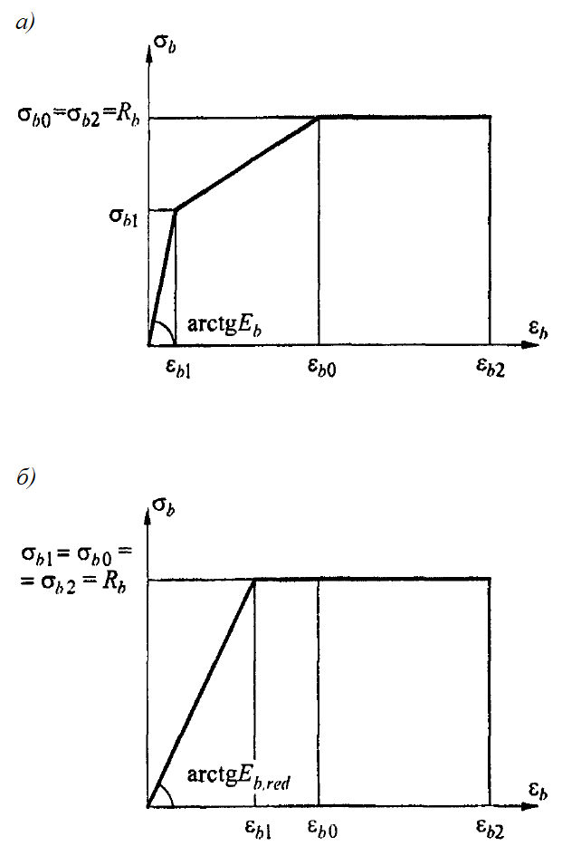
Рисунок 6.1 - Диаграммы состояния сжатого бетона
При трехлинейной диаграмме (рисунок 6.1, а ) сжимающие напряжения бетона в зависимости от относительных деформаций укорочения бетона определяют по формулам:
при ε b 1 ≤ ε b ≤ ε b 0
при ε b 0 ≤ ε b ≤ ε b 2
Значения напряжений σ b 1 принимают
а значения относительных деформаций ε b 1 принимают
Значение ε b 0 определяют при непродолжительном действии нагрузки по формуле (6.1) с безразмерным коэффициентом λ, определяемым по формуле (6.2).
Значения предельных относительных деформаций бетонов ε b 2 при продолжительном действии нагрузки допускается принимать по СП 63.13330.
При двухлинейной диаграмме (рисунок 6.2, б ) сжимающие напряжения бетона в зависимости от относительных деформаций определяют по формулам: при 0 ≤ ε b ≤ ε b
Значения приведенного модуля деформации бетона Eb,red определяют по формуле
где ε b 1 ,red = 0,0022 принимается согласно СП 63.13330.
6.2Арматура
7Расчет элементов бетонных и железобетонных конструкций по предельным состояниям первой группы 7.1 Расчет бетонных элементов по прочности
Расчет внецентренно сжатых элементов при расположении продольной сжимающей силы в пределах поперечного сечения элемента выполняют без учета сопротивления бетона растянутой зоны (рисунок 7.1), принимая, что достижение предельного состояния характеризуется разрушением сжатого бетона. Сопротивление бетона сжатию условно представляют напряжениями, равными Rb, равномерно распределенными по сжатой зоне бетона с центром тяжести, совпадающим с точкой приложения продольной силы.
Расчет элементов, работающих на сжатие при расположении продольной сжимающей силы за пределами поперечного сечения элемента, изгибаемых элементов и элементов, в которых не допускают трещины по условиям эксплуатации конструкций выполняют с учетом сопротивления бетона растянутой зоны (рисунок 7.2). При этом расчете принимают, что предельное состояние характеризуется достижением предельных усилий в бетоне растянутой зоны (разрушением или появлением трещин).
Рисунок 7.1 - Схема усилий и эпюра напряжений в сечении, нормальном к продольной оси внецентренно сжатого бетонного элемента, рассчитываемого по прочности без учета сопротивления бетона растянутой зоны
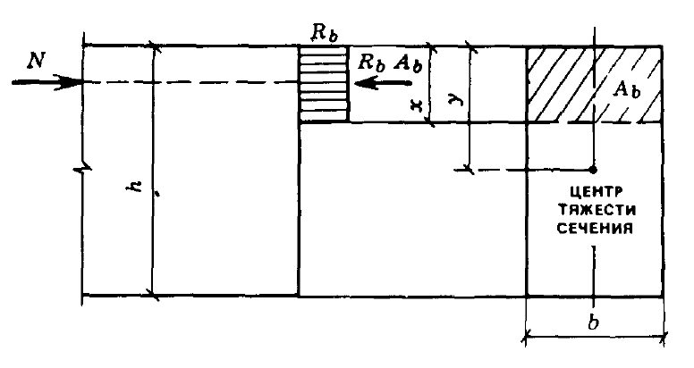
Предельные усилия (рисунок 7.2) определяют исходя из условий, что:
- сечения после деформаций остаются плоскими;
- наибольшее относительное удлинение крайнего растянутого волокна бетона равно 2𝑅𝑏𝑡 /𝐸𝑏 ;
- напряжения в бетоне сжатой зоны определяются с учетом упругих (а в некоторых случаях и неупругих) деформаций бетона;
- напряжения в бетоне растянутой зоны распределены равномерно и равны Rbt .
Рисунок 7.2 - Схема усилий и эпюра напряжений в сечении, нормальном к продольной оси изгибаемого (внецентренно сжатого) бетонного элемента, рассчитываемого по прочности с учетом сопротивления бетона растянутой зоны
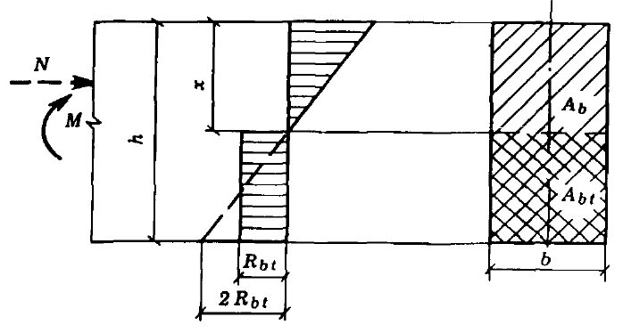
Применение бетонных внецентренно сжатых элементов не допускается при эксцентриситетах приложения продольной силы с учетом прогибов е 0 η, превышающих:
- в зависимости от сочетания нагрузок:
- 0,9𝑦 - при основном сочетании;
- 0,95𝑦 - при «особом» сочетании;
- в зависимости от вида и класса бетона: 𝑦 - 1 - для бетона класса выше В7,5; 𝑦 - 2 - для других классов бетона,
- где y - расстояние, см, от центра тяжести сечения до наиболее сжатого волокна бетона.
где Аb - площадь сжатой зоны бетона, определяемая из условия, что ее центр тяжести совпадает с точкой приложения равнодействующей внешних сил.
Для элементов прямоугольного сечения Аb определяется по формуле
Внецентренно сжатые бетонные элементы, в которых появление трещин не допускается должны быть проверены с учетом сопротивления бетона растянутой зоны (7.1.1, рисунок 7.2) из условия
Для элементов прямоугольного сечения условие (7.3) имеет вид
где φ - см. формулу (8.14).
где Ncr - условная критическая сила, определяемая по формуле
Таблица 7.1
где φ l - коэффициент, учитывающий влияние длительного действия нагрузки на прогиб элемента в предельном состоянии, определяемый по формуле
но не более 1+β (β - коэффициент, принимаемый в зависимости от вида бетона по таблице 7.1);
М - момент относительно растянутой или наименее сжатой грани сечения от действия постоянных, длительных и кратковременных нагрузок;
Мl - то же, от действия постоянных и длительных нагрузок; l 0 - определяется по таблице 7.2; δ е -коэффициент, принимаемый равным е 0 / h но не менее δ е ,min , определяемый по формуле
| Вид бетона | Коэффициент β в формуле (7.7) |
|---|---|
| 1 Бетон плотной структуры: на крупном пористом заполнителе по ГОСТ 32496 мелком заполнителе: - плотном по ГОСТ 8736 - пористом по ГОСТ 32496 на заполните из пористых горных пород по ГОСТ 22263 | 1,0 1,0 1,5 2,5 |
| 2 Бетон поризованной структуры на пористом заполнителе по ГОСТ 32496 | 2,0 |
Таблица 7.2
| Характер опирания стен и столбов | Расчетная длина l 0 внецентренно сжатых бетонных элементов |
|---|---|
| 1 С опорами вверху и внизу: - при шарнирах на двух концах независимо от величины смещения опор - при защемлении одного из концов и возможном смещении опор для зданий: | Н |
| многопролетных однопролетных | 1,25H 1,50H |
| 2 Свободно стоящие | 2,00H |
| Обозначение - «H» - высота столба (стены) в пределах этажа за вычетом толщины плиты перекрытия или высота свободно стоящей конструкции. | Обозначение - «H» - высота столба (стены) в пределах этажа за вычетом толщины плиты перекрытия или высота свободно стоящей конструкции. |
Если изгибающие моменты (или эксцентриситеты) от полной нагрузки и от суммы постоянных и длительных с разными знаками, то при абсолютном значении эксцентриситета полной нагрузки е 0 превышающем 0,1 h , принимают φ = 1,0; если это условие не удовлетворяется, значение φ l принимают равным
где φ l 1 определяют по формуле (7.7), принимая М равным произведению продольной силы N от действия постоянных, длительных и кратковременных нагрузок на расстояние от центра тяжести до растянутой или наименее сжатой от действия постоянных и длительных нагрузок грани сечения.
Для элементов прямоугольного сечения Wpl принимается равным
7.2Расчет железобетонных элементов по прочности
- сопротивление бетона растяжению принимается равным нулю;
- сопротивление бетона сжатию представляется напряжениями, равными Rb и равномерно распределенными по сжатой зоне бетона;
- деформации (напряжения) в арматуре определяются в зависимости от высоты сжатой зоны бетона;
- растягивающие напряжения в арматуре принимаются не более расчетного значения сопротивления растяжению Rs ;
- сжимающие напряжения в арматуре принимаются не более расчетного значения сопротивления сжатию Rsc .
где ω - характеристика сжатой зоны бетона, определяемая по формуле
здесь α - коэффициент, принимаемый равным 0,80;
Rb и R , МПа; σ sc,u = 400 МПа.
при этом высота сжатой зоны определяется из формулы
Рисунок 7.3 - Схема усилий и эпюра напряжений в сечении, нормальном к продольной оси изгибаемого железобетонного элемента, при расчете его по прочности
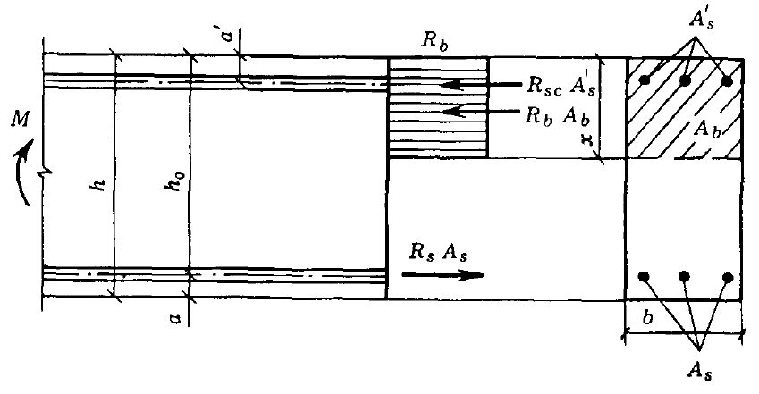
расчет производится как для прямоугольного сечения шириной b ' f согласно 7.2.5; если граница проходит в ребре (рисунок 7.4, б ), т. е. условие (7.16) не соблюдается, расчет производится из условия
при этом высота сжатой зоны бетона х определяется из формулы
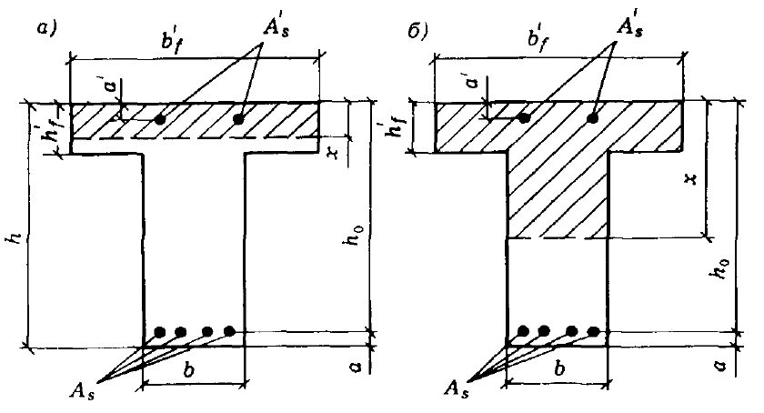
а - в полке; б - в ребре
Рисунок 7.4 - Положение границы сжатой зоны в сечении изгибаемого железобетонного элемента
Значение b ' f , вводимое в расчет, принимается из условия, что ширина свеса полки в каждую сторону от ребра должна быть не более 1/6 пролета элемента при отсутствии поперечных ребер и не более:
- 1/2 расстояния в свету между продольными ребрами - при наличии поперечных ребер или при h ' f ≥ 0,1 h ;
- при консольных свесах полки:
3 h ' f - при 0,05 h ≤ h ' f < 0.1 h ; свесы не учитываются - при h ' f < 0,05 h .
при этом высота сжатой зоны определяется по формуле
где е - расстояние от точки приложения продольной силы N до центра тяжести сечения или наименее сжатой арматуры при полностью сжатом сечении элемента
η - см. 7.1.6.
- при ξ = х / h 0 > ξ R - также из условия (7.19), но при этом высота сжатой зоны бетона определяется: для элементов из бетона класса В30 и ниже с ненапрягаемой арматурой классов А240, А400, А500 - по формуле
Рисунок 7.5 - Схема усилий и эпюра напряжений в сечении, нормальном к продольной оси внецентренно сжатого железобетонного элемента, при расчете его по прочности
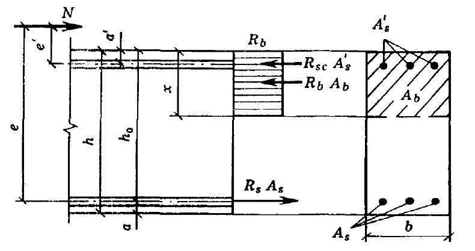
где l 0 - принимается согласно 7.2.11; δ e - коэффициент, принимаемый согласно 7.1.6; φ l - коэффициент, определяемый по формуле (7.7), при этом моменты M и Ml определяются относительно оси, параллельной линии, ограничивающей сжатую зону и проходящей через центр наиболее растянутого или наименее сжатого (при целиком сжатом сечении) стержня арматуры, соответственно от действия полной нагрузки и от действия постоянных и длительных нагрузок. Если изгибающие моменты (или эксцентриситеты) от действия полной нагрузки и от действия постоянных и длительных нагрузок c разными знаками, то следует учитывать 7.1.6;
- φ p - коэффициент, учитывающий влияние предварительного напряжения арматуры на жесткость элемента; при равномерном обжатии сечения напрягаемой арматурой φ p определяется по формуле
σ bp - определяется при коэффициенте γ sp < 1,0;
Rb - принимается без учета коэффициентов условий работы бетона; в формуле (7.25) значение e 0 / h принимается не более 1,5;
При расчете из плоскости действия изгибающего момента эксцентриситет продольной силы e 0 принимается равным значению случайного эксцентриситета.
Для элементов наиболее часто встречающихся конструкций допускается принимать расчетную длину l 0 :
- для колонн многоэтажных зданий при числе пролетов не менее двух и соединениях ригелей и колонн, рассчитываемых как жесткие, при конструкциях перекрытий: сборных - равной H ; монолитных - равной 0,7 H , где H - высота этажа (расстояние между центрами узлов);
- по таблице 7.3 - для колонн одноэтажных зданий с шарнирным опиранием несущих конструкций покрытий, жестких в своей плоскости (способных передавать горизонтальные усилия), а также для эстакад;
- по таблице 7.4 - для элементов ферм и арок.
где Аs,tot - площадь сечения всей продольной арматуры.
- если продольная сила N приложена между равнодействующими усилий в арматуре S и S' (рисунок 7.6, а ) - из условий:
- если продольная сила приложена за пределами расстояния между равнодействующими усилий в арматуре S и S' (рисунок 7.6, б ) - из условия
при этом высота сжатой зоны бетона определяется по формуле
Таблица 7.3
| Расчетная длина l 0 колонн одноэтажных зданий при расчете | Расчетная длина l 0 колонн одноэтажных зданий при расчете | Расчетная длина l 0 колонн одноэтажных зданий при расчете | |||||
|---|---|---|---|---|---|---|---|
| зданий и колонн | попе- речной рамы или перпен- дикуля- | их в плоскости перпендикулярной к поперечной раме или параллельной оси эстакады | их в плоскости перпендикулярной к поперечной раме или параллельной оси эстакады | ||||
| Подкрановая (нижняя) | при наличии | при отсут- ствии | |||||
| рной к оси эстакады | связей в плоскости продольного ряда колонн или анкерных опор | связей в плоскости продольного ряда колонн или анкерных опор | |||||
| Здания | С мосто- выми кранами | При учете нагрузки от кранов | Разрезных | 1,5 Н 1 | 0,8 Н 1 | 1,2 Н 1 | |
| Здания | С мосто- выми кранами | При учете нагрузки от кранов | часть колонн при подкрановых балках | Неразрезных | 1,2 Н 1 | 0,8 Н 1 | 0,8 Н 1 |
| Здания | С мосто- выми кранами | При учете нагрузки от кранов | Надкрановая (верхняя) часть колонн | Разрезных | 2,0 Н 2 | 1,5 Н 2 | 2,0 Н 2 |
| Здания | С мосто- выми кранами | При учете нагрузки от кранов | при подкрановых балках | Неразрезных | 2,0 Н 2 | 1,5 Н 2 | 1,5 Н 2 |
| Здания | Подкрановая (нижняя) | Однопро- летных | 1,5 Н | 0,8 Н 1 | 1,2 Н | ||
| Здания | часть колонн зданий | Многопро- летных | 1,2 Н | 0,8 Н 1 | 1,2 Н | ||
| Здания | Надкрановая (верхняя) | Разрезных | 2,5 Н 2 | 1,5 Н 2 | 2,0 Н 2 | ||
| Здания | часть колонн при подкрановых балках | Неразрезных | 2,0 Н 2 | 1,5 Н 2 | 1,5 Н 2 | ||
| Здания | Колонны ступен- чатые | Нижняя часть колонн | Однопро- летных | 1,5 Н | 0,8 Н | 1,2 Н | |
| Здания | Колонны ступен- чатые | зданий | Многопро- летных | 1,2 Н | 0,8 Н | 1,2 Н | |
| Здания | Без мостовых | Верхняя часть колонн | Верхняя часть колонн | 2,5 Н 2 | 2,0 Н 2 | 2,5 Н 2 | |
| Здания | Однопро- летных | 1,5 Н | 0,8 Н | 1,2 Н | |||
| Здания | Колонны постоянного сечения зданий | Колонны постоянного сечения зданий | Многопро- летных | 1,2 Н | 0,8 Н | 1,2 Н | |
| Эстакады | Крановые | При подкрановых балках | При подкрановых балках | Разрезных | 2,0 Н 1 | 0,8 Н 1 | 1,5 Н 1 |
| Эстакады | Крановые | Неразрезных | 1,5 Н 1 | 0,8 Н 1 | Н 1 | ||
| Эстакады | Шарнирном | 2,0 Н | Н | 2,0 Н |
| Под трубо- проводы | При соединении колонн с пролетным строением | Жестком | 1,5 Н | 0,7 Н | 1,5 Н |
Обозначения:
«Н» - полная высота колонны от верха фундамента до горизонтальной конструкции (стропильной или подстропильной, распорки) в соответствующей плоскости;
«Н 1» - высота подкрановой части колонны от верха фундамента до низа подкрановой балки;
«Н 2» -высота надкрановой части колонны от ступени колонны до горизонтальной конструкции в соответствующей плоскости.
Примечание - При наличии связей до верха колонн в зданиях с мостовыми кранами расчетная длина надкрановой части колонн в плоскости оси продольного ряда колонн принимается равной Н 2 .
Таблица 7.4
| Наименование элемента | Расчетная длина элементов ферм и арок, м |
|---|---|
| 1 Элементы ферм: - верхний пояс при расчете: | |
| при е 0 <1/8 h 1 | 0,9 l |
| при е 0 ≥1/8 h 1 | 0,8 l |
| из плоскости фермы: | |
| для участка под фонарем (при ширине фонаря 12 м и более) | 0,8 l |
| в остальных случаях | 0,9 l |
| - раскосы и стойки при расчете: | |
| в плоскости фермы | 0,8 l |
| из плоскости фермы: | |
| при b 1 / b 2 <1,5 | 0,9 l |
| при b 1 / b 2 ≥1,5 | 0,8 l |
| 2 Арки: | |
| трехшарнирной | 0,580 L |
| двухшарнирной | 0,540 L |
| бесшарнирной | 0,365 L |
| - при расчете из плоскости арки (любой) | L |
Обозначения:
«l» - длина элемента между центрами примыкающих узлов, а для верхнего пояса фермы при расчете из плоскости фермы - расстояние между точками его закрепления;
«L» - длина арки вдоль ее геометрической оси; при расчете из плоскости арки - длина арки между точками ее закрепления из плоскости арки;
«h 1» - высота сечения верхнего пояса;
«b 1 » , «b 2 » - ширина сечения соответственно верхнего пояса и стойки (раскоса) фермы.
Если полученное из расчета по формуле (7.30) значение х > ξ Rh 0, в условие (7.29) подставляется x = ξ Rh 0, где ξ R определяется согласно 7.2.4.
при этом знак «плюс» перед скобкой принимается для внецентренного сжатия и изгиба, знак «минус» - для растяжения.
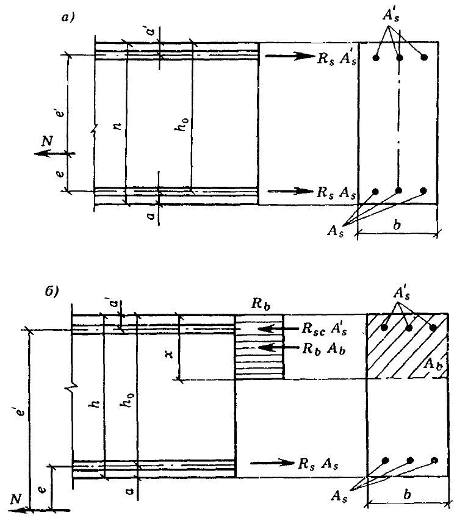
а - продольная сила N приложена между равнодействующими усилий в арматуре S и S' ; б - то же, за пределами расстояния между равнодействующими усилий в арматуре S и S'
Рисунок 7.6 - Схема усилий и эпюра напряжений в сечении, нормальном к продольной оси внецентренно растянутого железобетонного элемента, при расчете его по прочности
В формуле (7.31):
- М - в изгибаемых элементах - проекция момента внешних сил на плоскость, перпендикулярную к прямой, ограничивающей сжатую зону бетона, во внецентренно сжатых и растянутых элементах -момент продольной силы N относительно оси, параллельной прямой, ограничивающей сжатую зону бетона, и проходящей:
- через центр тяжести сечения, наиболее растянутого или наименее сжатого стержня продольной арматуры -во внецентренно сжатых и изгибаемых элементах;
- через точку сжатой зоны, наиболее удаленную от указанной прямой - во внецентренно растянутых элементах;
- Sb -статический момент площади сечения сжатой зоны бетона относительно соответствующей из указанных выше осей;
Ssi - статический момент площади сечения i -го стержня продольной арматуры относительно соответствующей из указанных осей; σ si - напряжение в i -м стержне продольной арматуры, определяемое по формуле (7.33).
I-I - плоскость, параллельная плоскости действия изгибающего момента, или плоскость, проходящая через точки приложения продольной силы и равнодействующих внутренних сжимающих и растягивающих усилий; 1 - точка приложения равнодействующей усилий в сжатой арматуре и в сжатой зоне бетона; 2 - точка приложения равнодействующей усилий в растянутой арматуре
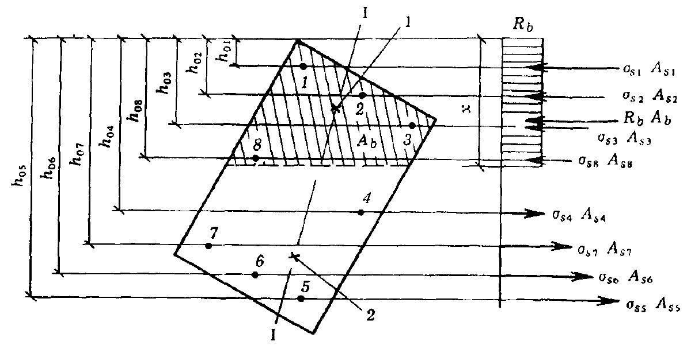
Рисунок 7.7 - Схема усилий и эпюра напряжений в сечении, нормальном к продольной оси железобетонного элемента, в общем случае расчета по прочности
Высота сжатой зоны бетона х и напряжение σ si определяются из совместного решения уравнений:
В уравнении (7.32) знак «минус» перед N принимается для внецентренно сжатых элементов, знак «плюс» - для внецентренно растянутых.
Кроме того, для определения положения границы сжатой зоны при косом изгибе требуется соблюдение дополнительного условия параллельности плоскости действия моментов внешних и внутренних сил, а при косом внецентренном сжатии или растяжении - условия, что точки приложения внешней продольной силы, равнодействующей сжимающих усилий в бетоне и арматуре и равнодействующей усилий в растянутой арматуре должны лежать на одной прямой (рисунок 7.7).
Напряжение σ si вводится в расчетные формулы со своим знаком, полученным при расчете по формуле (7.33), при этом необходимо соблюдать следующие условия: во всех случаях Rsi ≥σ si ≥ -Rsci .
В формулах (7.32)-(7.33):
Asi - площадь сечения i -го стержня продольной арматуры; ξ 𝑖 - относительная высота сжатой зоны бетона, ξ 𝑖 = 𝑥 h0𝑖 , где h0𝑖 -расстояние от оси, проходящей через центр тяжести сечения рассматриваемого i -го стержня арматуры и параллельной прямой, ограничивающей сжатую зону бетона, до наиболее удаленной точки сжатой зоны сечения (рисунок 7.7);
- ω - характеристика сжатой зоны бетона, определяемая по формуле (7.13); ξ 𝑒𝑙𝑖 , ξ 𝑅𝑖 - относительная высота сжатой зоны бетона, соответствующая ,
достижению в рассматриваемом стержне напряжений, равных Rsi значения ξ 𝑅𝑖 определяются по формуле где σ sRi = Rsi + 400, МПа ( i - означает порядковый номер стержня арматуры);
- σ sc,u -предельное напряжение в арматуре сжатой зоны бетона, принимаемое равным 400 МПа.
- на действие поперечной силы по наклонной полосе между наклонными трещинами (7.2.16);
- на действие поперечной силы по наклонной трещине (7.2.17-7.2.19);
- на действие поперечной силы по наклонной сжатой полосе между грузом и опорой (для коротких консолей колонн - 7.2.20);
- на действие изгибающего момента по наклонной трещине (7.2.21).
Коэффициент φ w 1 , учитывающий влияние хомутов, нормальных к продольной оси элемента, определяется по формуле
где α = 𝐸𝑠 𝐸𝑏 , μ 𝑤 = 𝐴𝑠𝑤 𝑏𝑠 .
Коэффициент φ b 1 определяется по формуле
где β - коэффициент, принимаемый равным 0,02;
Rb - МПа.
Рисунок 7.8 - Схема усилий в сечении, наклонном к продольной оси железобетонного элемента, при расчете его по прочности на действие поперечной силы
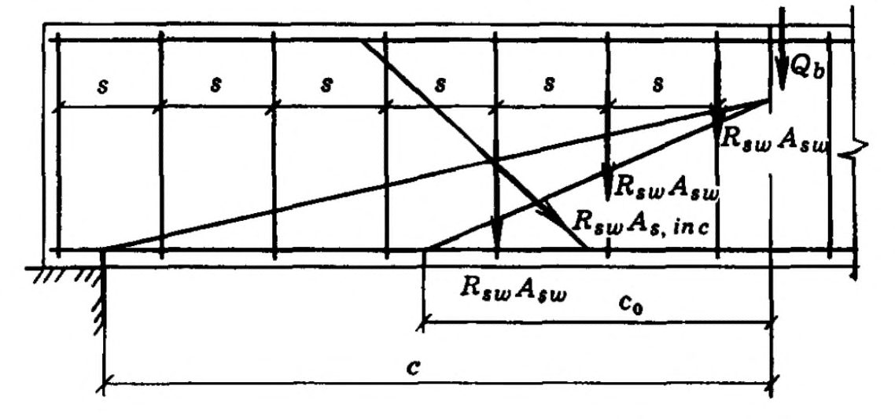
Поперечная сила Q в условии (7.38) определяется от внешней нагрузки, расположенной по одну сторону от рассматриваемого наклонного сечения.
Поперечное усилие Qb , воспринимаемое бетоном, определяется по формуле
где c - длина проекции наиболее опасного наклонного сечения на продольную ось элемента.
Коэффициент φ 𝑏2 , учитывающий влияние вида бетона, принимается равным для бетона марки по средней плотности:
- D1900 и более - 1,90;
- D1800 и менее: при плотном мелком заполнителе - 1,75; при пористом мелком заполнителе - 1,50.
Коэффициент φ f , учитывающий влияние сжатых полок в тавровых и двутавровых элементах, определяется по формуле
но не более 0,5.
При этом 𝑏 𝑓 ' принимается не более b +3 h ' f , а поперечная арматура должна быть заанкерена в полке.
Коэффициент φ n , учитывающий влияние продольных сил, определяется по формулам: при действии продольных сжимающих сил
но не более 0,5; при действии продольных растягивающих сил
но не более 0,8.
Значение (1+φ f +φ n ) во всех случаях принимается не более 1,5.
Значение Qb , вычисленное по формуле (7.39), принимается не менее
Коэффициент φ 𝑏3 принимается равным для бетона при марке по средней плотности:
0,5 - D1900 и более;
0,4 - D1800 и менее.
При расчете железобетонных элементов с поперечной арматурой должна быть обеспечена прочность по наклонному сечению в пределах участка между хомутами, между опорой и отгибом и между отгибами.
Поперечные усилия Qsw и Qs,inc определяются как сумма проекций на нормаль к продольной оси элемента предельных усилий соответственно в хомутах и отгибах, пересекающих опасную наклонную трещину.
Длина c 0 проекции опасной наклонной трещины на продольную ось элемента определяется из минимума выражения Qb + Qsw + Qs,inc , где в формулу (7.39) вместо c подставляется c 0; полученное значение c0 принимается не более 2 h 0 и не более значения c , а также не менее h 0, если c > h 0.
Для элементов с поперечной арматурой в виде хомутов, нормальных к продольной оси элемента с постоянным шагом в пределах рассматриваемого наклонного сечения, значение c 0 соответствует минимуму выражения Qb + Qsw , определяемому по формуле
где qsw - усилие в хомутах на единицу длины элемента, определяемое по формуле
Для таких элементов поперечное усилие Qsw определяется по формуле
При этом для хомутов, устанавливаемых по расчету, должно удовлетворяться условие
Кроме того, поперечная арматура должна соответствовать 10.6.5-10.6.7.
где правая часть условия (7.47) принимается не более 2,5 Rbt и не менее .
Коэффициент φ 𝑏4 принимается равным для бетона марки по средней плотности:
D1900 и более - 1,2;
D1800 и менее - 1,0.
Коэффициенты φ 𝑏3 и φ n , а также значения Q и c в условии (7.47) определяются согласно 7.2.17.
Рисунок 7.9 - Схема для расчета железобетонных балок с наклонными сжатыми гранями
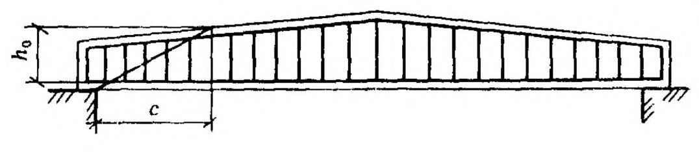
где его правая часть принимается не более 3,5 Rbtbh 0 и не менее правой части условия (7.47); θ - угол наклона расчетной сжатой полосы к горизонтали.
𝐴𝑠𝑤 - площадь сечения хомутов в одной плоскости; 𝑠𝑤 - расстояние между хомутами, измеренное по нормали к ним.
При этом учитываются горизонтальные и наклонные хомуты под углом не более 45° к горизонтали.
Поперечное армирование коротких консолей колонн должно соответствовать 10.6.9.
Рисунок 7.10 - Схема для расчета коротких консолей
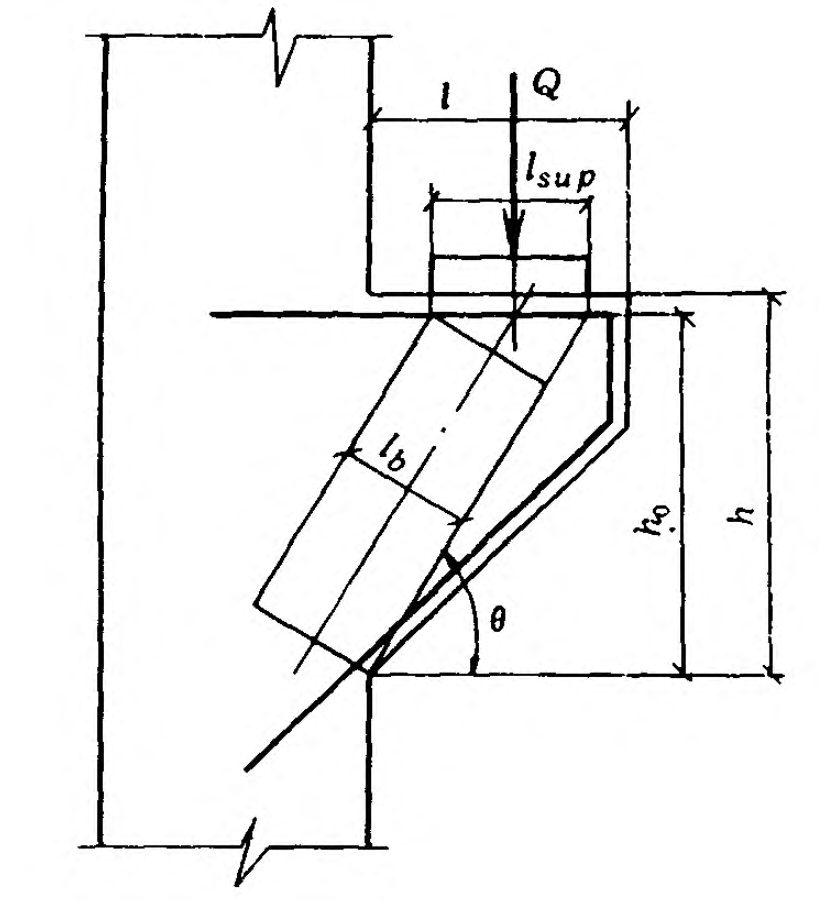
Ширина наклонной сжатой полосы l b определяется по формуле
где l sup - длина площадки передачи нагрузки вдоль вылета консоли.
При определении длины l sup следует учитывать особенности передачи нагрузки при различных схемах опирания конструкций на консоли (свободно опертые или защемленные балки, расположенные вдоль вылета консоли; балки, расположенные поперек вылета консоли, и т. д.).
Коэффициент φ w 2, учитывающий влияние хомутов, расположенных по высоте консоли, определяется по формуле
Момент M в условии (7.52) определяется от внешней нагрузки, расположенной по одну сторону от рассматриваемого наклонного сечения, относительно оси, перпендикулярной к плоскости действия момента и проходящей через точку приложения равнодействующей усилий Nb в сжатой зоне.
Рисунок 7.11 - Схема усилий в сечении, наклонном к продольной оси железобетонного элемента, при расчете его по прочности на действие изгибающего момента
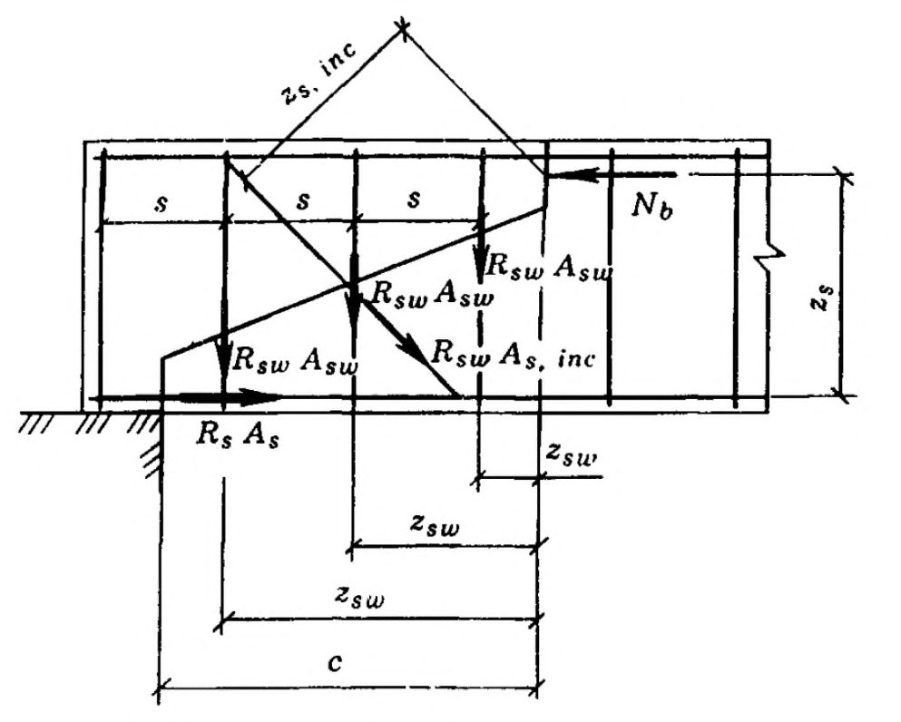
Моменты Ms , Msw и Ms,inc определяются как сумма моментов относительно той же оси от усилий соответственно в продольной арматуре, хомутах и отгибах, пересекающих растянутую зону наклонного сечения.
При определении усилий в арматуре, пересекающей наклонное сечение, следует учитывать ее анкеровку за наклонным сечением.
Высота сжатой зоны бетона наклонного сечения определяется из условия равновесия проекций усилий в сжатой зоне бетона и в арматуре, пересекающей растянутую зону наклонного сечения, на продольную ось элемента.
Расчет наклонных сечений на действие момента производится в местах обрыва или отгиба продольной арматуры, а также в приопорной зоне балок и у свободного края консолей. Кроме того, расчет наклонных сечений на действие момента производится в местах резкого изменения конфигурации элемента (подрезки и т. п.).
На приопорных участках элементов момент Ms , воспринимаемый продольной арматурой, пересекающей растянутую зону наклонного сечения, определяется по формуле
где As - площадь сечения продольной арматуры, пересекающей наклонное сечение;
- zs - расстояние от равнодействующей усилий в продольной арматуре до равнодействующей усилий в сжатой зоне бетона.
При отсутствии у продольной арматуры анкеровки расчетные сопротивления арматуры растяжению Rs в месте пересечения ею наклонного сечения принимаются сниженными.
Момент Msw , воспринимаемый хомутами, нормальными к продольной оси элемента, с равномерным шагом в пределах растянутой зоны рассматриваемого наклонного сечения, определяется по формуле
где qsw - усилие в хомутах на единицу длины элемента, определяемое по формуле (7.45);
- c -длина проекции наиболее опасного наклонного сечения на продольную ось элемента.
- сопротивление бетона растяжению принимается равным нулю;
- сжатая зона пространственного сечения условно представляется плоскостью, расположенной под углом θ к продольной оси элемента, а сопротивление бетона сжатию -напряжениями R b ·sin2θ, равномерно распределенными по сжатой зоне;
- растягивающие напряжения в продольной и поперечной арматуре, пересекающей растянутую зону рассматриваемого пространственного сечения, принимаются равными расчетным сопротивлениям Rs и Rsw соответственно;
- напряжение в арматуре, расположенной в сжатой зоне, принимается равным Rsw .
где b , h - ширина и высота граней элемента.
При этом значение Rb для бетона классов выше В30 принимается как для бетона класса В30.
Рисунок 7.12 - Схема усилий в пространственном сечении железобетонного элемента, работающего на изгиб с кручением, при расчете его по прочности
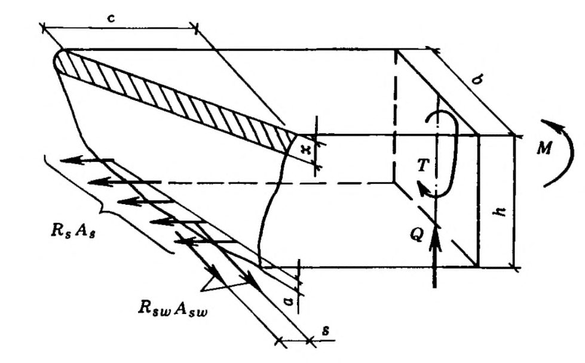
Высота сжатой зоны х определяется по формуле
Расчет должен производиться для трех расчетных схем расположения сжатой зоны бетона пространственного сечения:
1-я - у сжатой от изгиба грани элемента (рисунок 7.13, а );
- 2-я - у грани элемента, параллельной плоскости действия изгибающего момента (рисунок 7.13, б );
3-я - у растянутой от изгиба грани элемента (рисунок 7.13, в ). а - у сжатой от изгиба грани элемента; б - у грани элемента, параллельной плоскости действия изгибающего момента; в - у растянутой от изгиба грани элемента
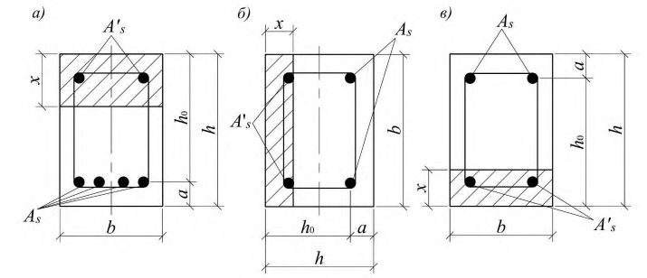
Рисунок 7.13 - Схема расположения сжатой зоны пространственного сечения
В формулах (7.55) и (7.56):
As , A ' s -площади поперечного сечения продольной арматуры, расположенной для конкретной расчетной схемы соответственно в растянутой и сжатой зонах;
- b , h - ширина и высота граней элемента, соответственно параллельных и перпендикулярных к линии, ограничивающей сжатую зону бетону;
где c - длина проекции линии, ограничивающей сжатую зону бетона, на продольную ось элемента; расчет производится для наиболее опасного значения, определяемого последовательным приближением и принимаемого не более 2 h + b .
- В формуле (7.55) значения æ и φ q , характеризующие соотношение между действующими усилиями T , M и Q , принимаются: при отсутствии изгибающего момента: æ = 0 φ 𝑞 = 1;
Крутящий момент Т , изгибающий момент М и поперечная сила Q принимаются в сечении, нормальном к продольной оси элемента и проходящем через центр тяжести сжатой зоны бетона пространственного сечения.
Значения коэффициента φ w , характеризующего соотношение между поперечной и продольной арматурами, определяются по формуле
где 𝐴𝑠𝑤 - площадь сечения одного стержня хомута, расположенного у растянутой грани, для рассматриваемой расчетной схемы; s - расстояние между указанными выше хомутами.
При этом значения φ w принимаются:
где M - изгибающий момент, принимаемый для 2-й схемы равным нулю, для 3-й схемы - со знаком «минус»;
Mu - предельный изгибающий момент, воспринимаемый нормальным сечением элемента.
Если значение φ w , подсчитанное по формуле (7.59), меньше φ w, min , то значение усилия 𝑅𝑠𝐴𝑠 , вводимое в формулы (7.55) и (7.56), умножается на отношение φ w / φ w, min .
В случае, когда выполняется условие
вместо расчета по 2-й схеме производится расчет из условия где αφ b ≥ 1,0; α = 1,0 для бетона класса ниже В25; α = 13,5 𝑅𝑏𝑡 𝑅𝑏 для бетона класса В25 и выше;
но не более следующих значений: при схеме приложения нагрузки (рисунок 7.14, а , в , г , е ) и для бетона классов: выше В7,5 - 2,5;
В3,5; В5; В7,5 - 1,5;
В2,5 и ниже - 1,2; при схеме приложения нагрузки (рисунок 7.14, б , д , ж ) независимо от класса бетона - 1,0.
Rb , Rbt - принимаются как для бетонных конструкций (пункт 6 таблицы Б.1); Aloc 2 - расчетная площадь смятия, определяемая согласно 7.2.26.
При этом должны выполняться следующие условия:
- при местной нагрузке по всей ширине элемента b в расчетную площадь включается участок длиной не более b в каждую сторону от границы местной нагрузки (рисунок 7.14, а );
- при местной краевой нагрузке по всей ширине элемента расчетная площадь Aloc 2 равна площади смятия Aloc 1 (рисунок 7.14, б );
- при местной нагрузке в местах опирания концов прогонов и балок в расчетную площадь включается участок шириной, равной глубине заделки прогона или балки, и длиной не более расстояния между серединами пролетов, примыкающих к балке (рисунок 7.14, в );
- если расстояние между балками превышает двойную ширину элемента, длина расчетной площади определяется как сумма ширины балки и удвоенной ширины элемента (рисунок 7.14, г );
В формулах (7.62) и (7.63): b - ширина грани сечения, перпендикулярной к плоскости изгиба;
Qsw + Qb - определяются согласно 7.2.17.
где N - продольная сжимающая сила от местной нагрузки;
Aloc1 - площадь смятия (рисунок 7.14);
- ψ -коэффициент, зависящий от характера распределения местной нагрузки по площади смятия и принимаемый равным 0,75.
Rb,loc - расчетное значение сопротивления бетона смятию, определяемое по формуле
- при местной краевой нагрузке на угол элемента (рисунок 7.14, д ) расчетная площадь Aloc 2 равна площади смятия Aloc 1 ;
- при местной нагрузке, приложенной на части длины и ширины элемента, расчетная площадь принимается согласно рисунку 7.14, е . При наличии нескольких нагрузок указанного типа, расчетные площади ограничиваются линиями, проходящими через середину расстояний между точками приложения двух соседних нагрузок;
- при местной краевой нагрузке, расположенной в пределах выступа стены (пилястры) или простенка таврового сечения, расчетная площадь Aloc 2 равна площади смятия Aloc 1 (рисунок 7.14, ж );
- при определении расчетной площади для сечений сложной формы не должны учитываться участки, связь которых с загруженным участком не обеспечена с необходимой надежностью (рисунок 7.14, и ).
Примечание - При местной нагрузке от балок, прогонов, перемычек и других элементов, работающих на изгиб, учитываемая в расчете глубина опоры при определении Aloc 1 и Aloc 2 принимается не более 20 см.
где F - продавливающая сила; α - коэффициент, принимаемый равным 0,80;
- um - среднеарифметическое значений периметров верхнего и нижнего оснований пирамиды, образующейся при продавливании в пределах рабочей высоты сечения.
При определении um и F предполагается, что продавливание происходит по боковой поверхности пирамиды, меньшим основанием которой служит площадь действия продавливающей силы, а боковые грани наклонены под углом 45° к горизонтали (рисунок 7.15, а ).
Продавливающая сила F принимается равной силе, действующей на пирамиду продавливания, за вычетом нагрузок, приложенных к бóльшему основанию пирамиды продавливания (считая по плоскости расположения растянутой арматуры) и сопротивляющихся продавливанию.
Если схема опирания такова, что продавливание происходит только по поверхности пирамиды с углом наклона боковых граней более 45° (например, в свайных ростверках, рисунок 7.15, б ), правая часть формулы (7.68) определяется для фактической пирамиды продавливания с умножением на h 0 / c . При этом значение несущей способности принимается не более значения, соответствующего пирамиде при c = 0,4 h 0 , где c - длина горизонтальной проекции боковой грани пирамиды продавливания. а - при местной нагрузке по всей ширине элемента; б - при местной краевой нагрузке по всей ширине элемента; в, г - при местной нагрузке в местах опирания концов прогонов и балок; д - при местной краевой нагрузке на угол элемента; е - при местной нагрузке, приложенной на части длины и ширины элемента; при местной краевой нагрузке, расположенной в пределах выступа стены или простенка; ж - при местной краевой нагрузке, расположенной в пределах выступа стены (пилястры); и - сечений сложной формы;
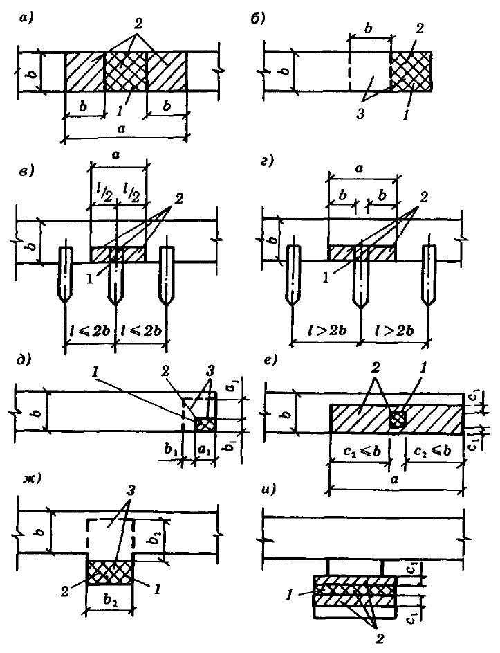
1 - площадь смятия; 2 - расчетная площадь смятия; 3 - минимальная зона армирования сетками
Рисунок 7.14 - Схемы для расчета железобетонных элементов на местное сжатие а - при наклоне боковых граней пирамиды продавливания под углом 45°; б - то же, более 45°
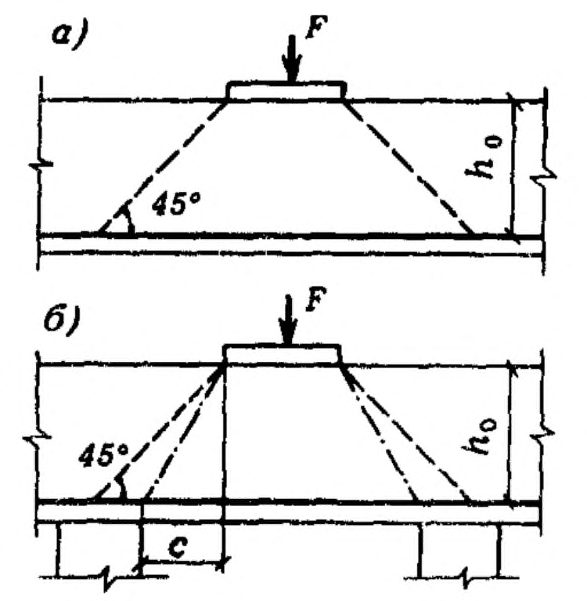
Рисунок 7.15 - Схемы для расчета железобетонных элементов на продавливание
При установке в пределах пирамиды продавливания хомутов, нормальных к плоскости плиты, расчет должен производиться из условия
но не более 2 Fb . Усилие Fb принимается равным правой части условия (7.66), а Fsw определяется как сумма всех поперечных усилий, воспринимаемых хомутами, пересекающими боковые грани расчетной пирамиды продавливания, по формуле
где Rsw не должно превышать значения, соответствующего арматуре класса АI.
При учете поперечной арматуры значение Fsw должно быть не менее 0,5 Fb .
При расположении хомутов на ограниченном участке вблизи сосредоточенного груза производится дополнительный расчет на продавливание пирамиды с верхним основанием, расположенным по контуру участка с поперечной арматурой, из условия (7.66).
Поперечная арматура должна соответствовать требованиям 10.6.8.
Расчет на продавливание плит перекрытия выполняют по СП 63.13330.
где F - отрывающая сила; hs - расстояние от уровня передачи отрывающей силы на элемент до центра тяжести сечения продольной арматуры;
∑𝑅𝑠𝑤𝐴𝑠𝑤 -сумма поперечных усилий, воспринимаемых хомутами, устанавливаемыми дополнительно по длине зоны отрыва, a ,равной
здесь b - ширина площадки передачи отрывающей силы.
Рисунок 7.16 - Схема для расчета железобетонных элементов на отрыв
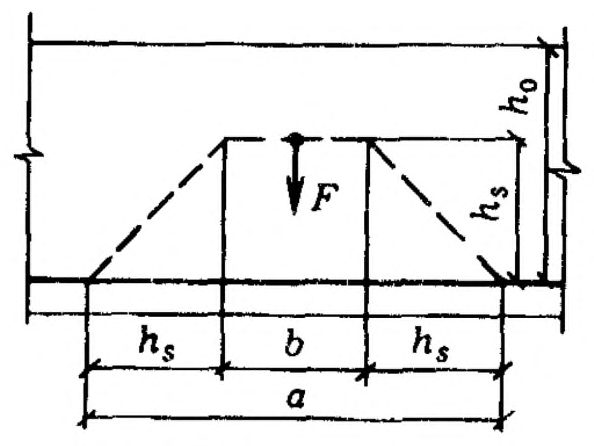
Значения hs и b устанавливаются в зависимости от характера и условий приложения отрывающей нагрузки на элемент (через консоли, примыкающие элементы и др.).
где Aan -суммарная площадь поперечного сечения анкеров наиболее напряженного ряда;
Nan -наибольшее растягивающее усилие в одном ряду анкеров, определяемое по формуле
Qan -сдвигающее усилие, приходящееся на один ряд анкеров, определяемое по формуле
𝑁𝑎𝑛 ' - наибольшее сжимающее усилие в одном ряду анкеров, определяемое по формуле
Рисунок 7.17 - Схема усилий, действующих на закладную деталь
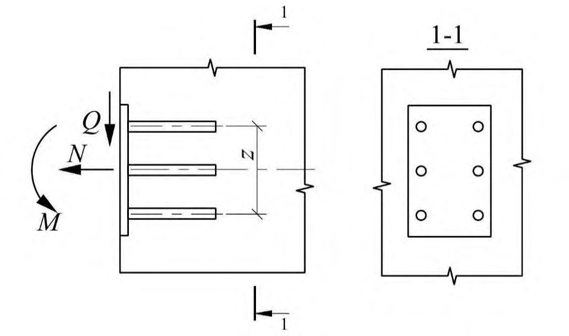
В формулах (7.71)-(7.74):
M , N , Q - соответственно изгибающий момент, нормальная и сдвигающая силы, действующие на закладную деталь. Момент определяется относительно оси, расположенной в плоскости наружной грани пластины и проходящей через центр тяжести всех анкеров;
- nan - число рядов анкеров вдоль направления сдвигающей силы; если не обеспечивается равномерная передача сдвигающей силы Q на все ряды анкеров, то при определении сдвигающего усилия Qan учитывается не более четырех рядов;
- z - расстояние между крайними рядами анкеров;
- λ - коэффициент, определяемый для анкерных стержней диаметром 8 25 мм для бетона классов В12,5-В30 по формуле
но принимаемый не более 0,7 нормируемой прочности; для бетона классов выше В30 - как для класса В30; где Aan 1 - площадь анкерного стержня наиболее напряженного ряда, см² ; β - коэффициент, принимаемый равным ρ m /2400, (ρ m -средняя плотность бетона, кг/м³ ); δ - коэффициент, определяемый по формуле
но принимаемый не менее 0,15; где ω = 0,3 𝑁𝑎𝑛 при Nan >0 (прижатие);
𝑄𝑎𝑛 ω = 0,6 𝑁 𝑄 при N ' an ≤0 (нет прижатия); если в анкерах отсутствуют растягивающие усилия, коэффициент δ принимается равным 1,0.
Площадь сечения анкеров остальных рядов должна приниматься равной площади сечения анкеров наиболее напряженного ряда.
В формулах (7.72) и (7.74) нормальное усилие считается положительным, если направлено от закладной детали (рисунок 7.17), и отрицательным - если направлена к ней. В случаях, когда нормальные усилия Nan и N'an , а также сдвигающее усилие Qan при вычислении по формулам (7.71)-(7.73) получают отрицательные значения, в формулах (7.71)-(7.72) и (7.76) их принимают равными нулю. Кроме того, если Nan получает отрицательное значение, то в формуле (7.73) принимается Nan = N .
При расположении закладной детали на верхней (при бетонировании) поверхности изделия коэффициент λ уменьшается на 20 %, а значение N ' an принимается равным нулю.
где Aan,inc - суммарная площадь поперечного сечения наклонных анкеров;
Nan - см. 7.2.29.
При этом должны устанавливаться нормальные анкеры, рассчитываемые по формуле (7.71) при λ = 1,0 и при значениях Qan , равных 0,1 сдвигающего усилия, определяемого по формуле (7.73).
где dan - диаметр анкерного стержня, требуемый по расчету;
Rsq - расчетное сопротивление стали на срез, принимаемое согласно СП 16.13330.
При применении сварных соединений, обеспечивающих большую зону включения пластины в работу при вырывании из нее анкерного стержня, и соответствующем обосновании возможна корректировка формулы (7.77) для таких сварных соединений.
Толщина пластины должна также соответствовать технологическим требованиям по сварке.
8Расчет элементов железобетонных конструкций по предельным состояниям второй группы
8.1Расчет железобетонных элементов по образованию трещин
- сечения после деформации остаются плоскими;
- наибольшее относительное удлинение крайнего растянутого волокна бетона равно 2𝑅𝑏𝑡,𝑠𝑒𝑟/𝐸𝑏 ;
- напряжения в бетоне сжатой зоны (при наличии) определяются с учетом упругих или неупругих деформаций бетона, при этом наличие неупругих деформаций учитывается уменьшением ядрового расстояния r (8.1.4);
- напряжения в бетоне растянутой зоны распределены равномерно и равны значению 𝑅𝑏𝑡,𝑠𝑒𝑟 ;
- напряжения в арматуре равны алгебраической сумме напряжений, соответствующих приращению деформаций окружающего бетона, и напряжений, вызванных усадкой и ползучестью бетона.
где Ncrc - усилие, воспринимаемое сечением, нормальным к продольной оси элемента, при образовании трещин и определяемое по формуле
где α = 𝐸𝑠 𝐸𝑏 .
где Mr -момент внешних сил, расположенных по одну сторону от рассматриваемого сечения, относительно оси, параллельной нулевой линии и проходящей через ядровую точку, наиболее удаленную от растянутой зоны, трещинообразование которой проверяется;
Mcrc - момент, воспринимаемый сечением, нормальным к продольной оси элемента, при образовании трещин и определяемый по формуле
здесь Mrp - момент усилия P относительно той же оси, что и при определении Mr ; знак момента определяется направлением вращения («плюс» когда направления вращения моментов Mrp и Mr противоположны; «минус» - когда направления совпадают).
Усилие P рассматривают как внешнюю растягивающую силу, определяемую по формуле (9.8), принимая напряжения σ' s и σ s в ненапрягаемой арматуре численно равными значениям потерь от усадки бетона по пункту 8 таблицы 9.1 (как для арматуры, натягиваемой на упоры).
Значение Mr определяется по формуле для изгибаемых элементов (рисунок 8.1, а )
для внецентренно сжатых элементов (рисунок 8.1, б )
для внецентренно растянутых элементов (рисунок 8.1, в )
Значения Mrp определяются: при расчете по образованию трещин в зоне сечения, растянутой от действия внешних нагрузок, но сжатой от действия усилия предварительного обжатия (рисунок 8.2), по формуле
при расчете по образованию трещин в зоне сечения, растянутой от действия усилия предварительного обжатия (рисунок 8.2), по формуле
а - при изгибе; б - при внецентренном сжатии; в - при внецентренном растяжении; 1 -ядровая точка; 2 - центр тяжести приведенного сечения
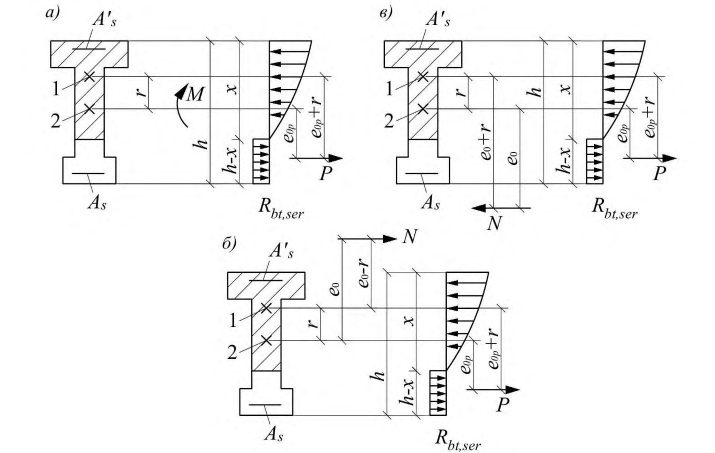
Рисунок 8.1 - Схемы усилий и эпюры напряжений в поперечном сечении элемента при расчете его по образованию трещин, нормальных к продольной оси элемента, в зоне сечения, растянутой от действия внешних нагрузок по формуле
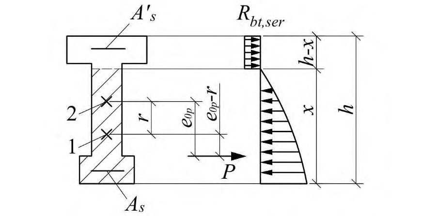
1 - ядровая точка; 2 - центр тяжести приведенного сечения
Рисунок 8.2 - Схема усилий и эпюра напряжений в поперечном сечении элемента при расчете его по образованию трещин, нормальных к продольной оси элемента, в зоне сечения, растянутой от действия усилия предварительного обжатия
В формулах (8.6)-(8.9): r - расстояние от центра тяжести приведенного сечения до ядровой точки, наиболее удаленной от растянутой зоны, трещинообразование которой проверяется.
Значение r определяется для элементов: внецентренно растянутых, если выполняется условие
внецентренно растянутых по формуле
изгибаемых по формуле
В формулах (8.11) и (8.12):
но принимается не менее 0,7 и не более 1,0; где σ 𝑏 - максимально напряжение в сжатом бетоне от внешней нагрузки и усилия предварительного напряжения, вычисляемое как для упругого тела по приведенному сечению;
Wpl - определяется по 8.1.5; α = 𝐸𝑠 𝐸𝑏 - отношение соответствующих модулей упругости арматуры Es и бетона Еb .
B - класс бетона по прочности на сжатие, МПа.
Значение αB следует принимать не менее 0,3.
Значения главных растягивающих и главных сжимающих напряжений в бетоне определяют по формуле
где σ х - нормальное напряжение в бетоне на площадке, перпендикулярной к продольной оси элемента, от внешней нагрузки и усилия предварительного обжатия;
- σ у -нормальное напряжение в бетоне на площадке, параллельной продольной оси элемента, от местного действия опорных реакций, сосредоточенных сил и распределенной нагрузки;
- τ ху - касательное напряжение в бетоне от внешней нагрузки и усилия обжатия вследствие предварительного напряжения отогнутых стержней.
Напряжения σ х , σ у и τ ху определяются как для упругого тела, за исключением касательных напряжений от действия крутящего момента, определяемых по формулам для пластического состояния элемента.
Значения напряжений σ х и σ у подставляют в формулу (8.19) со знаком «плюс», если они растягивающие, и со знаком «минус», если сжимающие. Напряжение σ mc в формуле (8.18) принимается по абсолютному значению.
Положение нулевой линии определяется из условия
где γ b 4 - коэффициент условий работы бетона (см. таблицу Б.1), определяемый по формуле
8.2Расчет железобетонных элементов по раскрытию трещин
Расчет железобетонных элементов по раскрытию трещин выполняется в соответствии с СП 63.13330.
8.3Расчет элементов железобетонных конструкций по деформациям
Расчет элементов железобетонных конструкций по деформациям выполняется в соответствии с СП 63.13330.
9Предварительно напряженные железобетонные конструкции
9.1Предварительное напряжение арматуры
Значение p , МПа, при механическом способе натяжения арматуры принимается равным 0,05σ sp , а при электротермическом и электротермомеханическом способах определяется по формуле
где l - длина натягиваемого стержня (расстояние между наружными гранями упоров), м.
При автоматизированном натяжении арматуры значение над чертой «360» в формуле (9.2) заменяется на «90».
Значения напряжений в напрягаемой арматуре S и S' , контролируемые в месте приложения усилия при натяжении арматуры на затвердевший бетон, принимаются равными соответственно σ con 2 и σ' con 2 определяемым из условия обеспечения в расчетном сечении напряжений σ sp и σ' sp по формулам:
В формулах (9.3) и (9.4): σ 𝑠𝑝 , σ 𝑠𝑝 ' - определяются без учета потерь предварительного напряжения;
𝑃, 𝑒 0𝑝 - определяются по формулам (9.8) и (9.9) при значениях σ sp и σ' sp с учетом первых потерь предварительного напряжения;
В конструкциях из бетона классов В7,5-В12,5 значения σ con 1 и σ con 2 должны быть не более 400 и 550 МПа соответственно.
При натяжении арматуры на упоры следует учитывать:
- первые потери (до передачи натяжения на бетон) - от деформации анкеров, трения арматуры об огибающие приспособления, от релаксации напряжений в арматуре, температурного перепада, деформации форм (при натяжении арматуры на формы), от быстронатекающей ползучести бетона;
- вторые потери (после передачи натяжения на бетон) - от усадки и ползучести бетона.
При натяжении арматуры на бетон следует учитывать:
- первые потери - от деформации анкеров, трения арматуры о стенки каналов или поверхность бетона конструкции;
- вторые потери - от релаксации напряжений в арматуре, усадки и ползучести бетона, смятия бетона под витками арматуры, деформации стыков между блоками (для конструкций, состоящих из блоков).
Потери предварительного напряжения арматуры следует определять по таблице 9.1, при этом суммарное значение потерь при проектировании конструкций необходимо принимать не менее 100 МПа.
Таблица 9.1
| Наименование фактора, вызывающего потери предварительного | Значения потерь предварительного напряжения, МПа, при натяжении арматуры | Значения потерь предварительного напряжения, МПа, при натяжении арматуры |
|---|---|---|
| напряжения арматуры | на упоры | на бетон |
| Первые потери | Первые потери | Первые потери |
| 1 Релаксация напряжений арматуры: при механическом способе натяжения арматуры: а) проволочной б) стержневой при электротермическом и электротермомеханическом | (0,22 σ 𝑠𝑝 𝑅 𝑠,𝑠𝑒𝑟 -0,1) σ 𝑠𝑝 | - |
| способах натяжения арматуры | 0,1 σ 𝑠𝑝 -20 | - |
| в) проволочной | 0,05 σ 𝑠𝑝 | - |
| г) стержневой | 0,03 σ 𝑠𝑝 σ 𝑠𝑝 принимается без учета потерь. Если вычисленные значения потерь окажутся отрицательными, их следует принимать равными нулю | - |
| 2 Температурный перепад (разность температур натянутой арматуры в зоне | Для бетона классов В15-В40 - 1,25Δ t Для бетона класса В45 и выше - 1,0Δ t | - - |
| нагрева и устройства, воспринимающего усилие натяжения при прогреве бетона) | Δ t - разность между температурой нагреваемой арматуры и неподвижных упоров (вне зоны нагрева), воспринимающих усилие натяжения, °С. При отсутствии точных данных принимается Δ t = 65°С | |
|---|---|---|
| 3 Деформации анкеров, расположенных у натяжных устройств | ∆𝑙 𝑙 𝐸 𝑠 , где Δ l - обжатие опрессованных шайб, смятие высаженных головок и т. п., принимаемое равным 2 мм; смещение стержней в инвентарных зажимах, определяемое по формуле ∆𝑙 = 1,25 +0,15𝑑 ; d - диаметр стержня, мм; l - длина натягиваемого стержня (расстояние между наружными гранями упоров формы или стенда), мм. При электротермическом способе натяжения потери от деформаций анкеров в расчете не учитываются, так как они учтены при определении значения полного удлинения арматуры | ∆𝑙 1 +∆𝑙 2 𝑙 𝐸 𝑠 , где Δ l 1 - обжатие шайб или прокладок, расположенных между анкерами и бетоном элемента, принимаемое равным 1 мм; Δ l 2 - деформация анкеров стаканного типа, колодок с пробками, анкерных гаек и захватов, принимаемая равной 1 мм; l - длина натягиваемого стержня (элемента), мм |
| 4 Трение арматуры: а) о стенки каналов или о поверхность бетона конструкций | - | σ 𝑠𝑝 (1- 1 𝑒 ω 𝑥+ δθ ) , где e - основание натуральных логарифмов; ω, δ - коэффициенты, определяемые по таблице 9.2; x - длина участка от натяжного устройства до расчетного сечения, м; θ - суммарный угол поворота оси арматуры, рад; σ sp - принимается без учета потерь |
| б) об огибающие приспособления | σ 𝑠𝑝 (1- 1 𝑒 δθ ) , где e - основание натуральных логарифмов; δ - коэффициент, принимаемый равным 0,25; θ - суммарный угол поворота оси арматуры, рад; σ sp - принимается без учета потерь | - |
| 5 Деформация стальной формы при изготовлении | η ∆𝑙 𝑙 𝐸 𝑠 , | - |
| предварительно напряженных железобетонных конструкций | где η - коэффициент, определяемый по формулам: при натяжении арматуры домкратом η 𝑛-1 2𝑛 , при натяжении арматуры намоточной машиной электротермомеханическим способом (50% усилия создается грузом) η 𝑛-1 4𝑛 , n - число групп стержней, натягиваемых неодновременно; Δ l - сближение упоров по линии действия усилия P , определяемое из расчета деформации формы; l - расстояние между наружными гранями упоров. При отсутствии данных о технологии изготовления и конструкции формы потери от ее деформации принимаются равными 30 МПа. При электротермическом способе натяжения потери от деформации формы в расчете не учитываются, так как они учтены при определении полного удлинения арматуры | |
|---|---|---|
| 6 Быстронатекающая ползучесть для бетона: а) естественного твердения | 40 σ 𝑏𝑟 𝑅 𝑏𝑟 при σ 𝑏𝑟 𝑅 𝑏𝑟 ≤ α; 40 α+85β ( σ 𝑏𝑟 𝑅 𝑏𝑟 -𝛼) при σ 𝑏𝑟 𝑅 𝑏𝑟 > α, где α и β - коэффициенты, принимаемые: α = 0,25 +0,025𝑅 𝑏𝑝 , но не более 0,8; 1,1<β = 5,25 -0,185𝑅 𝑏𝑝 < 2,5; σ bp - определяются на уровне центров тяжести продольной арматуры S и S' с учетом потерь по пунктам 1 - 5. При передаточной прочности 11 МПа и ниже вместо множителя 40 | - |
| б) подвергнутого тепловой обработке | принимается множитель 60. Потери вычисляются по формулам пункта 6а настоящей таблицы с умножением полученного результата на коэффициент, равный 0,85 | - |
| Вторые потери | Вторые потери | Вторые потери |
| 7 Релаксация напряжений арматуры: а) проволочной б) стержневой | - - | (0,22 σ 𝑠𝑝 𝑅 𝑠,𝑠𝑒𝑟 -0,1) σ 0,1 σ 𝑠𝑝 -20 |
| (см. пояснения к пункту 1) | ||||
|---|---|---|---|---|
| 8 Усадка бетона (9.1.5), МПа: | Бетон | Бетон | Независимо от условий твердения бетона | |
| 8 Усадка бетона (9.1.5), МПа: | естественного твердения | подвергнутый тепловой обработке при атмосферном давлении | Независимо от условий твердения бетона | |
| при мелком заполнителе: а) плотном б) пористом | 50 70 | 45 60 | 40 50 | |
| 9 Ползучесть бетона (9.1.5): а) при плотном мелком заполнителе | 150 ασ 𝑏𝑝 𝑅 𝑏𝑝 ⁄ при σ 𝑏𝑝 𝑅 𝑏𝑝 ⁄ ≤ 0,75 ; 300 α ( σ 𝑏𝑝 𝑅 𝑏𝑝 ⁄ -0,375) при σ 𝑏𝑝 𝑅 𝑏𝑝 ⁄ > 0,75 , где σ bp - см. пункты 1-6; α - коэффициент, принимаемый равным для бетона: естественного твердения - 1,00; подвергнутого тепловой обработке при атмосферном давлении - | 150 ασ 𝑏𝑝 𝑅 𝑏𝑝 ⁄ при σ 𝑏𝑝 𝑅 𝑏𝑝 ⁄ ≤ 0,75 ; 300 α ( σ 𝑏𝑝 𝑅 𝑏𝑝 ⁄ -0,375) при σ 𝑏𝑝 𝑅 𝑏𝑝 ⁄ > 0,75 , где σ bp - см. пункты 1-6; α - коэффициент, принимаемый равным для бетона: естественного твердения - 1,00; подвергнутого тепловой обработке при атмосферном давлении - | 150 ασ 𝑏𝑝 𝑅 𝑏𝑝 ⁄ при σ 𝑏𝑝 𝑅 𝑏𝑝 ⁄ ≤ 0,75 ; 300 α ( σ 𝑏𝑝 𝑅 𝑏𝑝 ⁄ -0,375) при σ 𝑏𝑝 𝑅 𝑏𝑝 ⁄ > 0,75 , где σ bp - см. пункты 1-6; α - коэффициент, принимаемый равным для бетона: естественного твердения - 1,00; подвергнутого тепловой обработке при атмосферном давлении - | 150 ασ 𝑏𝑝 𝑅 𝑏𝑝 ⁄ при σ 𝑏𝑝 𝑅 𝑏𝑝 ⁄ ≤ 0,75 ; 300 α ( σ 𝑏𝑝 𝑅 𝑏𝑝 ⁄ -0,375) при σ 𝑏𝑝 𝑅 𝑏𝑝 ⁄ > 0,75 , где σ bp - см. пункты 1-6; α - коэффициент, принимаемый равным для бетона: естественного твердения - 1,00; подвергнутого тепловой обработке при атмосферном давлении - |
| б) при пористом мелком заполнителе | 0,85 Потери вычисляются по формулам пункта 9 а настоящей таблицы с умножением полученного результата на коэффициент, равный | 0,85 Потери вычисляются по формулам пункта 9 а настоящей таблицы с умножением полученного результата на коэффициент, равный | 0,85 Потери вычисляются по формулам пункта 9 а настоящей таблицы с умножением полученного результата на коэффициент, равный | 0,85 Потери вычисляются по формулам пункта 9 а настоящей таблицы с умножением полученного результата на коэффициент, равный |
| 10 Смятие бетона под витками спиральной или кольцевой арматуры (при диаметре конструкции до 3 м) | - | - | 70 -0,22𝑑 𝑒𝑥𝑡 , где d ext - наружный диаметр конструкции, см | |
| 11 Деформация обжатия стыков между блоками (для конструкций, состоящих из блоков) Примечание - Потери | - предварительного | напряжения в напрягаемой | 𝑛∆𝑙 𝑙 𝐸 𝑠 , где n - число швов конструкции и оснастки по длине натягиваемой арматуры; Δl - обжатие стыка, принимаемое равным для стыков, заполненных бетоном, - 0,3 мм; при стыковании насухо - 0,5 мм; l - длина натягиваемой арматуры, мм арматуре S ' определяются так же, |
Примечание - Потери предварительного напряжения в напрягаемой арматуре S ' определяются так же, как в арматуре S .
Таблица 9.2
| Значение коэффициентов для определения потерь от трения арматуры (пункт 4 таблицы 9.1) | Значение коэффициентов для определения потерь от трения арматуры (пункт 4 таблицы 9.1) | Значение коэффициентов для определения потерь от трения арматуры (пункт 4 таблицы 9.1) | |
|---|---|---|---|
| Тип канала или поверхности | δ для арматуры в виде | δ для арматуры в виде | |
| ω | пучков, канатов | стержней периодического профиля | |
| 1 Канал: - с металлической поверхностью | 0,0030 | 0,35 | 0,40 |
| - с бетонной поверхностью, образованный жестким каналообразователем | 0 | 0,55 | 0,65 |
| - то же, с гибким каналообразователем | 0,0015 | 0,55 | 0,65 |
| 2 Бетонная поверхность | 0 | 0,55 | 0,65 |
- при заранее известном сроке загружения конструкции потери следует умножать на коэффициент φ l , определяемый по формуле
- где t - время, сут, отсчитываемое при определении потерь от ползучести со дня обжатия бетона, от усадки - со дня окончания бетонирования;
- для конструкций, предназначенных для эксплуатации при влажности воздуха ниже 40%, потери должны быть увеличены на 25 %.
- допускается применять более точные методы определения потерь, обоснованные в установленном порядке, если известны вид и качество цемента, состав бетона, условия изготовления и эксплуатации конструкции и т. п.
Знак «плюс» принимается при неблагоприятном влиянии предварительного напряжения (т. е. на конкретной стадии работы конструкции или на рассматриваемом участке элемента предварительное напряжение снижает несущую способность, способствует образованию трещин и т. п.), знак «минус» - при благоприятном.
Значения Δγ sp при механическом способе натяжения арматуры принимаются равными 0,1, а при электротермическом и электротермомеханическом способах натяжения определяются по формуле
но принимаются не менее 0,1; где p, σ sp - см. 9.1.2; np - число стержней напрягаемой арматуры в сечении элемента.
При определении потерь предварительного напряжения арматуры, а также при расчете по раскрытию трещин и по деформациям значение Δγ sp допускается принимать равным нулю.
Напряжения в сечениях, нормальных к продольной оси элемента, определяются по правилам расчета упругих материалов. При этом принимают приведенное сечение, включающее сечение бетона с учетом ослабления его каналами, пазами и т. п., а также сечение всей продольной (напрягаемой и ненапрягаемой) арматуры, умноженное на отношение модулей упругости арматуры и бетона. Если части бетонного сечения выполнены из бетонов разных классов или видов, их приводят к одному классу или виду, исходя из отношения модулей упругости бетона.
Усилие предварительного обжатия P и эксцентриситет его приложения e 0 p относительно центра тяжести приведенного сечения (рисунок 9.1) определяются по формулам:
где σ s , σ' s - напряжения в ненапрягаемой продольной арматуре S и S' соответственно, вызванные усадкой и ползучестью бетона; γ 𝑠𝑝 , γ 𝑠𝑝 ' , γ 𝑠 , γ 𝑠 ' - расстояния от центра тяжести приведенного сечения до точек приложения равнодействующих усилий соответственно в напрягаемой и ненапрягаемой продольной арматуре S и S' (рисунок 9.1).
Рисунок 9.1 - Схема усилий предварительного напряжения в арматуре в поперечном сечении железобетонного элемента
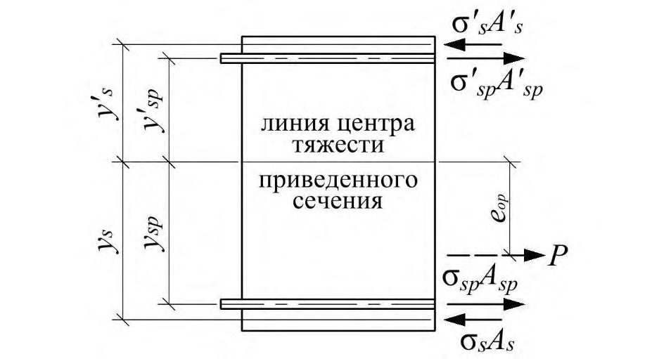
При криволинейной напрягаемой арматуре значения σ sp и σ' sp умножают соответственно на cosθ и cosθ', где θ и θ' - углы наклона оси арматуры к продольной оси элемента (для рассматриваемого сечения).
Напряжения σ sp и σ' sp принимают с учетом:
- первых потерь - в стадии обжатия бетона;
- первых и вторых потерь - в стадии эксплуатации элемента.
Напряжения σ s и σ' s принимают численно равными:
- потерям напряжений от быстронатекающей ползучести по пункту 6 таблицы 9.1 - в стадии обжатия бетона;
- сумме потерь напряжений от усадки и ползучести бетона по пунктам 6, 8 и 9 таблицы 9.1 - в стадии эксплуатации элемента.
Таблица 9.3
| Напряженное состояние сечения | Способ натяжения арматуры | Значение сжимающие напряжения в бетоне в стадии предварительного обжатия, в долях от передаточной прочности бетона σ 𝑏𝑝 /𝑅 𝑏𝑝 не более при расчетной зимней температуре наружного воздуха, °С | Значение сжимающие напряжения в бетоне в стадии предварительного обжатия, в долях от передаточной прочности бетона σ 𝑏𝑝 /𝑅 𝑏𝑝 не более при расчетной зимней температуре наружного воздуха, °С | Значение сжимающие напряжения в бетоне в стадии предварительного обжатия, в долях от передаточной прочности бетона σ 𝑏𝑝 /𝑅 𝑏𝑝 не более при расчетной зимней температуре наружного воздуха, °С | Значение сжимающие напряжения в бетоне в стадии предварительного обжатия, в долях от передаточной прочности бетона σ 𝑏𝑝 /𝑅 𝑏𝑝 не более при расчетной зимней температуре наружного воздуха, °С |
|---|---|---|---|---|---|
| минус 40 и выше | минус 40 и выше | ниже минус 40 | ниже минус 40 | ||
| при обжатии | при обжатии | при обжатии | при обжатии | ||
| центральном | внецентренном | центральном | внецентренном | ||
| 1 Напряжения уменьшаются или не изменяются при действии внешних нагрузок | На упоры | 0,85 | 0,95* | 0,70 | 0,85 |
| На бетон | 0,70 | 0,85 | 0,60 | 0,70 | |
| 2 Напряжения увеличиваются при действии внешних нагрузок | На упоры | 0,65 | 0,70 | 0,50 | 0,60 |
| 2 Напряжения увеличиваются при действии внешних нагрузок | На бетон | 0,60 | 0,65 | 0,45 | 0,50 |
Примечания
1 Значения 𝜎𝑏𝑝/𝑅𝑏𝑝 , указанные в настоящей таблице, для бетона в водонасыщенном состоянии при расчетной температуре воздуха ниже минус 40 °С следует принимать на 0,05 меньше.
- 2 Расчетные зимние температуры наружного воздуха принимаются согласно СП 131.13330.
- 3 Для бетона классов В7,5-В12,5 значения 𝜎𝑏𝑝/𝑅𝑏𝑝 следует принимать не более 0,30.
Напряжения σ bp определяются на уровне крайнего сжатого волокна бетона с учетом потерь предварительного напряжения по пунктам 1-6 таблицы 9.1 и при коэффициенте точности натяжения арматуры γ sp , равном единице.
где ω p и λ p принимаются по таблице 9.4.
К значению Rbp при необходимости вводятся коэффициенты условий работы бетона, кроме γ b 1 .
Значение σ sp в формуле (9.10) принимается равным:
- большему из значений Rs и σ sp - при расчете элементов по прочности;
- значению σ sp - при расчете элементов по трещиностойкости. Здесь σ sp принимается с учетом первых потерь по пунктам 1-5 таблицы 9.1.
Таблица 9.4
Примечание - Для элементов из бетона классов В7,5 - В12,5 значения ω p и λ p увеличиваются в 1,4 раза против приведенных в настоящей таблице.
| Вид и класс арматуры | Диаметр арматуры, мм | Коэффициенты для определения длины зоны передачи напряжений l p напрягаемой арматуры, применяемой без анкеров | Коэффициенты для определения длины зоны передачи напряжений l p напрягаемой арматуры, применяемой без анкеров |
|---|---|---|---|
| ω p | λ p | ||
| 1 Стержневая периодического профиля независимо от класса | Независимо от диаметра | 0,25 | 10 |
| 2 Высокопрочная арматурная проволока периодического профиля | 5 4 | 1,40 1,40 | 40 |
| 50 | |||
| класса Вр 1600 | 3 | 1,40 | 60 |
| 3 Арматурные канаты классов: К1600 | 15 | 1,00 | 25 |
| 12 | 1,10 | 25 | |
| 9 | 1,25 | 30 | |
| 6 | 1,40 | 40 |
При мгновенной передаче усилия обжатия на бетон для стержневой арматуры периодического профиля значения ω p и λ p увеличиваются в 1,25 раза. При диаметре стержней более 18 мм мгновенная передача усилий не допускается.
Для стержневой арматуры периодического профиля всех классов значение l p принимается не менее 15 d .
Начало зоны передачи напряжений при мгновенной передаче усилия обжатия на бетон для проволочной арматуры (за исключением высокопрочной проволоки класса В р 1200 с внутренними анкерами по длине заделки) принимается на расстоянии 0,25 l p от торца элемента.
9.2Расчет предварительно напряженных железобетонных конструкций по предельным состояниям первой и второй групп
10Конструктивные требования
При проектировании бетонных и железобетонных конструкций для обеспечения условий их изготовления, требуемой долговечности и совместной работы арматуры и бетона следует выполнять конструктивные требования, изложенные в настоящем разделе.
10.1Минимальные размеры сечения элементов
Кроме того, размеры сечения элементов железобетонных конструкций должны приниматься такими, чтобы соблюдались требования в части расположения арматуры в сечении (толщины защитных слоев бетона, расстояния между стержнями и т. п.) и анкеровки арматуры.
Размеры сечений внецентренно сжатых элементов должны приниматься такими, чтобы их гибкость l 0 / i , в любом направлении, не превышала:
- 200 - для железобетонных элементов;
- 120 - для колонн, являющихся элементами зданий;
- 90 - для бетонных элементов.
10.2Защитный слой бетона
Минимально допустимые значения защитных слоев бетона до арматуры и марку бетона по водонепроницаемости назначают по СП 28.13330.
Для каналов диаметром 11 см защитный слой назначают не менее 50 мм. При диаметрах каналов свыше 11 см принимаемую толщину защитного слоя проверяют расчетом на силовые воздействия и давление раствора при инъецировании канала.
При устройстве каналов с неизвлекаемыми каналообразователями рекомендуется применять неоцинкованные гибкие стальные рукава и гофрированные трубы из полимерных материалов (полиэтилен высокой плотности, полипропилен). Исключение оцинкованных каналообразователей вызвано опасностью наводороживания напрягаемой арматуры при контакте стали с цинковой поверхностью каналообразователей в результате образования коррозионных макропар, в которых стальная арматура служит катодом.
Неизвлекаемые каналообразователи из цельнотянутых стальных или полимерных труб допускается применять только на коротких участках в стыках между сборными блоками составных по длине пролетных строений и в местах перегибов и анкеровки напрягаемой арматуры.
Каналообразователи монолитных конструкций должны быть водонепроницаемыми по длине и сечению с возможностью создавать перегиб радиусом > 4 м. Внутреннюю поверхность стальных каналообразователей на время хранения и транспортирования рекомендуется защищать от коррозии с последующим удалением защитного состава. В качестве защиты можно использовать водорастворимую смазку типа СОЖ, удаляемую перед инъецированием, или другие материалы ингибирующего действия.
10.3Минимальные расстояния между стержнями арматуры
- не менее 25 мм - для нижней арматуры, 30 мм - для верхней; при расположении нижней арматуры более чем в два ряда по высоте расстояние между стержнями в горизонтальном направлении (кроме стержней двух нижних рядов) должно быть не менее 50 мм -если стержни при бетонировании занимают горизонтальное или наклонное положение;
- не менее 50 мм; при систематическом контроле фракционирования заполнителей бетона это расстояние может быть уменьшено до 35 мм, но при этом должно быть не менее полуторакратного наибольшего размера крупного заполнителя - если стержни при бетонировании занимают вертикальное положение.
При стесненных условиях допускается располагать стержни арматуры попарно (без зазора между ними).
В элементах с напрягаемой арматурой, натягиваемой на бетон (за исключением непрерывно армированных конструкций), расстояние в свету между каналами для арматуры должно быть не менее диаметра канала, но не менее 50 мм.
Примечание - Расстояние в свету между стержнями периодического профиля принимается по номинальному диаметру стержня без учета выступов и ребер.
10.4Анкеровка ненапрягаемой арматуры
но не менее 𝑙𝑎𝑛 = λ𝑎𝑛𝑑 , где значения ω an , Δλ an и λ an и допускаемые минимальные значения l an определяются по таблице 10.1. При этом гладкие арматурные стержни должны оканчиваться крюками или быть с приваренной поперечной арматурой по длине заделки. К значению Rb допускается вводить коэффициенты условий работы бетона, кроме γ b 1 (таблица Б.1 приложение Б).
В случае, когда анкеруемые стержни поставлены с запасом по площади сечения против требуемой расчетом по прочности с полным расчетным значением сопротивления, вычисленным по формуле (10.1), длину анкеровки l an допускается уменьшать, умножая на отношение необходимой по расчету и фактической площадей сечения арматуры.
Таблица 10.1
| Условие работы ненапрягаемой | Значения коэффициентов для определения анкеровки ненапрягаемой арматуры | Значения коэффициентов для определения анкеровки ненапрягаемой арматуры | Значения коэффициентов для определения анкеровки ненапрягаемой арматуры | Значения коэффициентов для определения анкеровки ненапрягаемой арматуры | Значения коэффициентов для определения анкеровки ненапрягаемой арматуры | Значения коэффициентов для определения анкеровки ненапрягаемой арматуры | Значения коэффициентов для определения анкеровки ненапрягаемой арматуры | Значения коэффициентов для определения анкеровки ненапрягаемой арматуры |
|---|---|---|---|---|---|---|---|---|
| периодического профиля | периодического профиля | периодического профиля | периодического профиля | гладкой | гладкой | гладкой | гладкой | |
| арматуры | ω an | Δλ an | λ an | l an ,мм | ω an | Δλ an | λ an | l an ,мм |
| не менее | не менее | не менее | не менее | |||||
| 1 Заделка арматуры: а) растянутой в растянутом бетоне б) сжатой или | 0,70 | 11 | 20 | 250 | 1,20 | 11 | 20 | 250 |
| растянутой в сжатом бетоне | 0,50 | 8 | 12 | 200 | 0,80 | 8 | 15 | 200 |
| 2 Стыки арматуры внахлестку: а) в растянутом бетоне | 0,90 | 11 | 20 | 250 | 1,55 | 11 | 20 | 250 |
| б) в сжатом бетоне | 0,65 | 8 | 15 | 200 | 1,00 | 8 | 15 | 200 |
Если по расчету вдоль анкеруемых стержней образуются трещины от растяжения бетона, то стержни должны быть заделаны в сжатую зону бетона на длину l an , определяемую по формуле (10.1).
При невозможности выполнения указанных требований должны быть приняты меры по анкеровке продольных стержней для обеспечения их работы с полным расчетным значением сопротивления в рассматриваемом сечении (постановка косвенной арматуры, приварка к концам стержней анкерующих пластин или закладных деталей, отгиб анкерующих стержней). При этом значение l an должно быть не менее 10 d .
Для закладных деталей должны учитываться следующие особенности. Длину растянутых анкерных стержней закладных деталей, заделанных в растянутом или в сжатом бетоне, при 𝜎𝑏𝑐 𝑅𝑏 > 0,75 или 𝜎𝑏𝑐 𝑅𝑏 < 0,25 следует определять по формуле (10.1), пользуясь значениями ω an , Δλ an и λ an по пункту 1а таблицы 10.1. В остальных случаях указанные значения следует принимать по пункту 1б таблицы 10.1. Здесь σ bc - сжимающие напряжения в бетоне от постоянных нагрузок, действующих перпендикулярно к анкерному стержню и определяемые как для упругого материала по приведенному сечению.
При действии на анкерные стержни закладной детали растягивающих и сдвигающих усилий правая часть формулы (10.1) умножается на коэффициент δ, определяемый по формуле
где Nan 1 , Qan 1 - растягивающее и сдвигающее усилие соответственно в анкерном стержне.
При этом длина анкерных стержней должна быть не меньше минимальных значений l an согласно настоящему пункту.
Анкеры из гладкой арматуры класса А240 следует применять только при наличии усилений на их концах в виде пластинок, высаженных головок и поперечных коротышей. Длина этих анкеров определяется расчетом на выкалывание и смятие бетона.
- если соблюдаются условие 7.2.18, длина запуска растянутых стержней за внутреннюю грань свободной опоры должна составлять не менее 5 d ;
- если условие 7.2.18 не соблюдается, длина запуска стержней за внутреннюю грань свободной опоры должна быть не менее 10 d .
Длина зоны анкеровки l an на крайней свободной опоре, на которой снижаются расчетные сопротивления арматуры, определяется согласно 10.4.2 и пункту 1 б таблицы 10.1.
Напряжение сжатия бетона на опоре σ b определяется делением опорной реакции на площадь опирания элемента и принимается не более 0,5 Rb .
Косвенное армирование распределяется по длине зоны анкеровки от торца элемента до ближайшей к опоре нормальной трещине.
Длина запуска стержней за внутреннюю грань опоры уменьшается против требуемой настоящим пунктом, если значение l an < 10 d , и принимается равным l an, но не менее 5 d . В этом случае, а также при приварке концов стержней к надежно заанкеренным стальным закладным деталям снижение расчетного значения сопротивления продольной арматуры на опорном участке не производится.
10.5Продольное армирование элементов
Таблица 10.2
| Условия работы арматуры | Минимальная площадь сечения продольной арматуры в железобетонных элементах, %площади сечения бетона |
|---|---|
| 1 Арматура S в изгибаемых, а также во внецентренно растянутых элементах при расположении продольной силы за пределами рабочей высоты сечения | 0,05 |
| 2 Арматура S , S' во внецентренно растянутых элементах при расположении продольной силы между арматурой S и S' | 0,05 |
| 3 Арматура S , S' во внецентренно сжатых элементах при: l 0 / i < 17 17 ≤ l 0 / i ≤ 35 | 0,05 |
| 0,10 | |
| 35 < l 0 / i ≤ 83 | 0,20 |
| l 0 / i > 83 | 0,25 |
Примечание - Минимальная площадь сечения арматуры, приведенная в настоящей таблице, относится к площади сечения бетона, равной произведению ширины прямоугольного сечения, или ширины ребра таврового (двутаврового) сечения на рабочую высоту сечения h 0. В элементах с продольной арматурой, расположенной равномерно по контуру сечения, а также в центрально-растянутых элементах указанное значение минимального армирования относится к полной площади сечения бетона.
В элементах с продольной арматурой, расположенной равномерно по контуру сечения, а также в центрально-растянутых элементах значение минимальной площади сечения всей продольной арматуры должно приниматься вдвое больше значений, приведенных в таблице 10.2.
Минимальный процент содержания арматуры S и S' во внецентренно сжатых элементах, несущая способность которых при расчетном эксцентриситете используется менее чем на 50 %, независимо от гибкости элементов принимается равным 0,05.
Значения, приведенные в таблице 10.2, не распространяются на армирование, определяемое расчетом элемента для стадий транспортирования и возведения; в этом случае площадь сечения арматуры определяется только расчетом по прочности. Если расчетом установлено, что несущая способность элемента исчерпывается одновременно с образованием трещин в бетоне растянутой зоны, то для слабоармированных элементов должны учитываться требования 5.8.
Требования настоящего пункта не учитываются при назначении площади сечения арматуры, устанавливаемой по контуру плит (панелей) из расчета на изгиб в плоскости плиты (панели).
- 16 - для бетона класса В 12,5 и ниже;
- 25 - для бетона класса В15 - В25;
- 40 - для бетона класса В30 и выше.
В изгибаемых элементах с арматурой класса А600 и ниже, диаметр продольных стержней, мм, должен быть не более:
- 16 - для бетона классов В12,5 и ниже;
- 25 - для бетона классов В15 - В25;
- 32 - для бетона классов В30 и выше.
Для арматуры более высоких классов предельные диаметры стержней должны быть согласованы в установленном порядке.
Диаметр продольных стержней внецентренно сжатых элементов монолитных конструкций должен быть не менее 12 мм.
В плитах расстояния между стержнями, заводимыми за грань опоры, должно быть не более 400 мм, причем площадь сечения этих стержней на 1 м ширины плиты должна составлять не менее 1/3 площади сечения стержней в пролете, определенной расчетом по наибольшему изгибающему моменту.
При армировании неразрезных плит сварными рулонными сетками все нижние стержни вблизи промежуточных опор допускается переводить в верхнюю зону.
Расстояния между осями рабочих стержней в средней части пролета плиты и над опорой (вверху) должны быть не более 200 мм при толщине плиты до 150 мм и не более 1,5 h при толщине плиты свыше 150 мм, где h - толщина плиты.
10.6Поперечное армирование элементов
Во внецентренно сжатых элементах с центрально-расположенной напрягаемой продольной арматурой (например, в сваях) установка поперечной арматуры не требуется, если сопротивление действию поперечных сил обеспечивается бетоном.
Поперечную арматуру допускается не устанавливать у граней тонких ребер изгибаемых элементов (шириной 150 мм и менее), по ширине которых располагается один продольный стержень или сварной каркас.
Во внецентренно сжатых линейных элементах и в сжатой зоне изгибаемых элементов при наличии учитываемой в расчете сжатой продольной арматуры хомуты должны быть на расстоянии:
При 𝑅𝑠𝑐 ≤ 400 МПа - не более 500 мм и не более: 20 d - сварных; 15 d - при вязаных каркасах; при 𝑅𝑠𝑐 ≤ 450 МПа - не более 400 мм и не более: 15 d - сварных; 12 d - при вязаных каркасах.
При этом конструкцией поперечной арматуры должно быть обеспечено закрепление сжатых стержней от бокового выпучивания их в любом направлении.
Расстояния между хомутами внецентренно сжатых элементов в местах стыкования рабочей арматуры внахлестку без сварки должны быть не более 10 d .
Если насыщение элемента требуемой по расчету сжатой продольной арматурой S' выше 1,5 %, а также если все сечение элемента сжато и общее насыщение арматурой S и S' выше 3 %, расстояние между хомутами должно быть не более 10 d и не более 300 мм.
При армировании внецентренно сжатых элементов плоскими сварными каркасами два крайних каркаса (расположенные у противоположных граней) должны быть соединены друг с другом для образования пространственного каркаса. Для этого у граней элемента, нормальных к плоскости каркасов, должны устанавливаться поперечные стержни, привариваемые контактной сваркой к угловым продольным стержням каркасов, или шпильки, связывающие эти стержни, на тех же расстояниях, что и поперечные стержни плоских каркасов.
Если крайние плоские каркасы имеют промежуточные продольные стержни, то они не реже чем через один стержень и не реже чем через 400 мм по ширине грани элемента должны связываться шпильками с продольными стержнями, расположенными у противоположной грани. Шпильки допускается не ставить при ширине грани элемента не более 400 мм и не более четырех продольных стержнях у этой грани.
- размеры ячеек сетки - не менее 45 мм, но не более 1/4 меньшей стороны сечения элемента и не более 100 мм;
- диаметр навивки спиралей или диаметр колец - не менее 200 мм;
- шаг сеток - не менее 60 мм, но не более 1/3 меньшей стороны сечения элемента и не более 150 мм;
- шаг навивки спиралей или шаг колец - не менее 40 мм, но не более 1/5 диаметра сечения элемента и не более 100 мм.
Сетки и спирали (кольца) должны охватывать всю рабочую продольную арматуру.
При усилении концевых участков внецентренно сжатых элементов должны устанавливаться сварные сетки косвенного армирования у торца - не менее четырех сеток на длине (считая от торца элемента) не менее 20 d , если продольная арматура выполняется из гладких стержней, и не менее 10 d - из стержней периодического профиля.
Диаметр хомутов в вязаных каркасах изгибаемых элементов должен приниматься, мм, не менее:
5 - при высоте сечения элемента, равной или менее 800 мм;
- 8 - то же, свыше 800 мм.
В сплошных плитах независимо от высоты, в многопустотных плитах (или аналогичных часторебристых конструкциях) высотой менее 300 мм и в балочных конструкциях высотой менее 150 мм допускается поперечную арматуру не устанавливать. При этом должно быть обеспечено условие расчета согласно 7.2.18.
- h /2 и не более150 мм - при высоте сечения элемента h , равной или менее 450 мм;
- h /3 и не более 500 мм - то же, свыше 450 мм.
- 3/4 h и не более 500 мм - на остальной части пролета при высоте сечения элемента более 300 мм.
Анкеровка указанной арматуры должна соответствовать 10.6.7.
10.7Сварные соединения арматуры и закладных деталей
Применяя ручную дуговую сварку при выполнении сварных соединений, рассчитываемых по прочности, в сетках и каркасах, следует устанавливать дополнительные конструктивные элементы в местах соединения стержней продольной и поперечной арматуры (прокладки, косынки, крючки и т. д.).
10.8Стыки ненапрягаемой арматуры внахлестку (без сварки)
Стыки стержней рабочей арматуры внахлестку не рекомендуется располагать в растянутой зоне изгибаемых и внецентренно растянутых элементов в местах полного использования арматуры. Такие стыки не допускаются в линейных элементах, сечение которых полностью растянуто (например, в затяжках арок) и во всех случаях применения стержневой арматуры класса А600 и выше.
Стыкование отдельных стержней, сварных сеток и каркасов без разбежки допускается при конструктивном армировании (без расчета) и на тех участках, где арматура используется не более чем на 50 %.
Стыки сварных сеток в направлении рабочей арматуры классов А300 и А400 выполняются без поперечных стержней в пределах стыка в одной или обеих стыкуемых сетках (рисунок 10.2). а - при поперечных стержнях, расположенных в одной плоскости; б, в - то же, в разных плоскостях
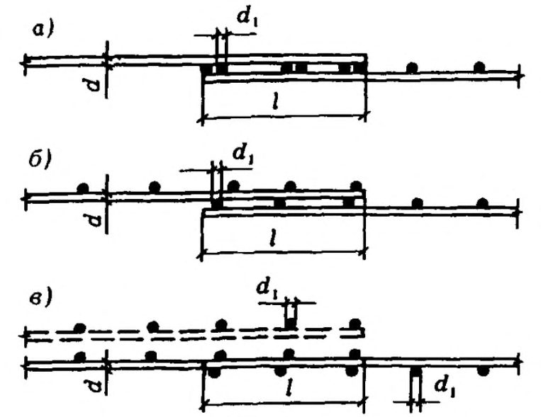
Рисунок 10.1 - Стыки сварных сеток внахлестку (без сварки) в направлении рабочей арматуры, выполненной из гладких стержней а - без поперечных стержней в пределах стыка в одной из стыкуемых сеток; б - то же, в обеих стыкуемых сетках
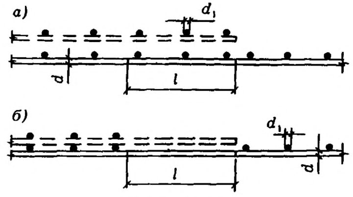
Рисунок 10.2 - Стыки сварных сеток внахлестку (без сварки) в направлении рабочей арматуры, выполненной из стержней периодического профиля
- на 50 мм (рисунок 10.3 а , б ) - при диаметре распределительной (поперечной) арматуры до 4 мм включ.;
- на 100 мм (рисунок 10.3 а , б ) - то же, свыше 4 мм.
При диаметре рабочей арматуры 16 мм и более сварные сетки в нерабочем направлении допускается укладывать впритык друг к другу, перекрывая стык специальными стыковыми сетками, укладываемыми с перепуском в каждую сторону не менее 15 d распределительной арматуры и не менее 100 мм (рисунок 10.3, в ).
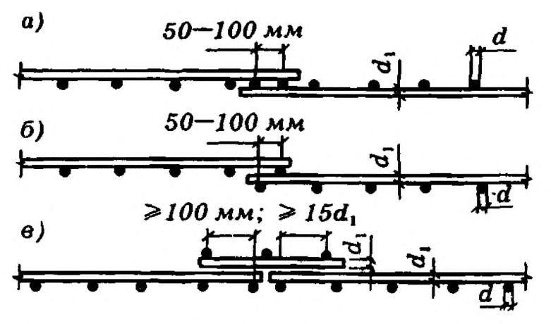
а - стык внахлестку с расположением рабочих стержней в одной плоскости; б - то же, с расположением рабочих стержней в разных плоскостях; в - стык впритык с наложением дополнительной стыковой сетки
Рисунок 10.3 - Стыки сварных сеток в направлении распределительной арматуры
Сварные сетки в нерабочем направлении допускается укладывать впритык без нахлестки и без дополнительных стыковых сеток при:
- укладке сварных полосовых сеток в двух взаимно перпендикулярных направлениях;
- наличии в местах стыков дополнительного конструктивного армирования в направлении распределительной арматуры.
10.9Стыки элементов сборных конструкций
Стыкование предварительно напряженных элементов и конструкций, к которым предъявляются требования водонепроницаемости, должно осуществляться бетоном на напрягающем цементе.
- сваркой стальных закладных деталей;
- сваркой выпусков арматуры;
- пропуском через каналы или пазы стыкуемых элементов стержней арматурных канатов или болтов с последующим натяжением их и заполнением швов и каналов цементным раствором или мелкозернистым бетоном;
- склеиванием элементов конструкционными полимеррастворами с применением соединительных деталей из стержневой арматуры.
При проектировании стыков элементов сборных конструкций должны предусматриваться такие соединения закладных деталей, при которых не происходило бы разгибания их частей и выколов бетона.
Закладные детали с анкерами должны состоять из отдельных пластин (уголков или фасонной стали) с приваренными к ним втавр или внахлестку анкерными стержнями преимущественно из арматуры классов A300, A400. Длина анкерных стержней закладных деталей при действии на них растягивающих сил должна быть не менее значения l an , определяемого согласно 10.4.2.
Длина анкерных стержней может быть уменьшена при условии приварки на концах стержней анкерных пластин или устройства высаженных горячим способом анкерных головок диаметром не менее 2 d - для арматуры классов A240 и A300 и не менее 3 d - для арматуры класса A400. В этих случаях длина анкерного стержня определяется расчетом на выкалывание и смятие бетона и принимается не менее 10 d (где d - диаметр анкера, мм).
Если анкеры, испытывающие растяжение, располагаются нормально к оси элемента и вдоль них могут образовываться трещины от основных усилий, действующих на элемент, концы анкеров должны быть усилены приваренными пластинами или высаженными головками.
Штампованные закладные детали должны состоять из полосовых анкеров c усилением (например, в виде сферических выступов) и участков, выполняющих функцию пластин (аналогично сварным деталям). Штампованные закладные детали следует проектировать из полосовой стали толщиной 4 - 8 мм таким образом, чтобы отходы при раскрое полосы были минимальными. Деталь необходимо рассчитывать по прочности полосовых анкеров и пластин. Прочность анкеровки детали проверяется при расчете бетона на раскалывание, выкалывание и смятие.
Толщина пластин закладных деталей определяется согласно 7.2.31 и в соответствии с требованиями сварки. В зависимости от технологии сварки отношение толщины пластины к диаметру анкерного стержня принимается в соответствии с требованиями нормативных документов.
10.10Отдельные конструктивные требования
Если в указанных случаях осадочные швы не предусматриваются, фундаменты должны обладать достаточной прочностью и жесткостью, предотвращающей повреждение вышележащих конструкций, или быть специальной конструкции, служащей для достижения этой же цели.
Осадочные швы, а также температурно-усадочные швы в сплошных бетонных и железобетонных конструкциях следует выполнять сквозными, разрезая конструкцию до подошвы фундамента. Температурно-усадочные швы в железобетонных каркасах выполняются посредством применения двойных колонн с доведением шва до верха фундамента.
Расстояния между температурно-усадочными швами в бетонных фундаментах и стенках подвалов допускается принимать в соответствии с расстояниями между швами, принятыми для вышележащих конструкций.
- в местах резкого изменения размеров сечения элементов;
- в местах изменения высоты стен (на участке не менее 1 м);
- в бетонных стенах под и над проемами каждого этажа;
- в конструкциях, подвергающихся воздействию динамической нагрузки;
- у менее напряженной грани внецентренно сжатых элементов.
Требования настоящего пункта не распространяются на элементы сборных конструкций, проверяемые на стадиях транспортирования и монтажа, в этом случае необходимое армирование определяется расчетом по прочности.
Если расчетом установлено, что прочность элемента исчерпывается одновременно с образованием трещин в бетоне растянутой зоны, то следует учитывать требования 5.8 для слабоармированных элементов (без учета работы растянутого бетона). Если, согласно расчету с учетом сопротивления растянутой зоны бетона, арматура не требуется и опытом доказана возможность транспортирования и монтажа таких элементов без арматуры, конструктивная арматура не предусматривается.
10.11Дополнительные требования по конструированию предварительно напряженных железобетонных элементов
Напряжение поперечной арматуры следует выполнять до натяжения продольной арматуры усилием не менее 15 % усилия натяжения всей продольной арматуры растянутой зоны опорного сечения.
Ненапрягаемая поперечная арматура должна быть надежно заанкерена по концам приваркой к закладным деталям.
При использовании в качестве напрягаемой рабочей арматуры высокопрочной арматурной проволоки периодического профиля, арматурных канатов однократной свивки, установка анкеров у концов напрягаемых стержней не требуется.
АПриложение А. Основные буквенные обозначения
Усилия от внешних нагрузок и воздействий в поперечном сечении элемента
М -изгибающий момент;
Мr -изгибающий момент с учетом момента усилия предварительного обжатия относительно центра тяжести приведенного сечения;
N - продольная сила;
Q - поперечная сила;
Т -крутящий момент.
Характеристики материалов
Rb,n - нормативное сопротивление бетона осевому сжатию;
Rb, Rb,ser -расчетные сопротивления бетона осевому сжатию для предельных состояний соответственно первой и второй групп;
Rbt,n -нормативное сопротивление бетона осевому растяжению;
Rbt, R bt,ser -расчетные сопротивления бетона осевому растяжению для предельных состояний соответственно первой и второй групп;
Rb,loc -расчетное сопротивление бетона смятию;
Rbp передаточная прочность бетона;
Rbond расчетное сопротивление сцепления арматуры с бетоном;
Rs, Rs,ser -расчетные сопротивления арматуры растяжению для предельных состояний соответственно первой и второй групп;
Rsw расчетное сопротивление поперечной арматуры растяжению;
Rsc -расчетное сопротивление арматуры сжатию для предельных состояний первой группы;
Еb - начальный модуль упругости бетона при сжатии и растяжении;
Eb.red -приведенный модуль деформации сжатого бетона;
Es модуль упругости арматуры;
Es.red - приведенный модуль деформации арматуры, расположенной в растянутой зоне элемента с трещинами; ε bo , ε bto - предельные относительные деформации бетона соответственно при равномерном осевом сжатии и осевом растяжении; ε s 0 -относительные деформации арматуры при напряжении, равном Rs ; ε b,sh -относительные деформации усадки бетона; φ b,сr - коэффициент ползучести бетона; α - отношение соответствующих модулей упругости арматуры Es и бетона Еb ; γ bi - коэффициент условий работы бетона; ν b,P - коэффициента поперечной деформации бетона (коэффициента Пуассона).
Характеристики положения продольной арматуры в поперечном сечении элемента
S - обозначение растянутой продольной арматуры:
S' - обозначение сжатой продольной арматуры: Геометрические характеристики b ширина прямоугольного сечения; ширина ребра таврового и двутаврового сечений; bf , b' f - ширина полки таврового и двутаврового сечений соответственно в растянутой и сжатой зонах; h высота прямоугольного, таврового и двутаврового сечений; hf , h' f -высота полки таврового и двутаврового сечений соответственно в растянутой и сжатой зонах; а, а' расстояние от равнодействующей усилий в арматуре S и S' соответственно до ближайшей грани сечения; h 0 , h' 0 - рабочая высота сечения, равная соответственно h -a и h -a' ; х высота сжатой зоны бетона; ξ - относительная высота сжатой зоны бетона, равная x / h 0 ; sw - расстояние между хомутами, измеренное по длине элемента; е 0 -эксцентриситет продольной силы N относительно центра тяжести приведенного сечения, определяемый согласно 7.1.7 и 8.1.7; е, е' -расстояния от точки приложения продольной силы N до равнодействующей усилий в арматуре соответственно S и S' ; е 0 р -эксцентриситет усилия предварительного обжатия относительно центра тяжести приведенного сечения; уп -расстояние от нейтральной оси до точки приложения усилия предварительного обжатия с учетом изгибающего момента от внешней нагрузки; ер расстояние от точки приложения усилия предварительного обжатия Np с учетом изгибающего момента от внешней нагрузки до центра тяжести растянутой или наименее сжатой арматуры; l - пролет элемента; l an -длина зоны анкеровки; l p - длина зоны передачи предварительного напряжения в арматуре на бетон; l 0 - расчетная длина элемента, подвергающегося действию сжимающей продольной силы; i - радиус инерции поперечного сечения элемента относительно центра тяжести сечения; ds, d sw -номинальный диаметр стержней соответственно продольной и поперечной арматуры; As, A's -площади сечения арматуры соответственно S и S' ; Asw площадь сечения хомутов, расположенных в одной нормальной к продольной оси элемента плоскости, пересекающей наклонное сечение; - коэффициент армирования, определяемый как отношение площади без учета μ s сечения арматуры S к площади поперечного сечения элемента bh 0 свесов сжатых и растянутых полок;
А - площадь всего бетона в поперечном сечении;
- Ab - площадь сечения бетона сжатой зоны; Аbt площадь сечения бетона растянутой зоны; Ared - площадь приведенного сечения элемента; Aloc -площадь смятия бетона; I - момент инерции сечения всего бетона относительно центра тяжести сечения элемента; I red -момент инерции приведенного сечения элемента относительно его центра тяжести; W момент сопротивления сечения элемента для крайнего растянутого волокна. r - расстояние от центра тяжести приведенного сечения до ядровой точки, наиболее удаленной от растянутой зоны, трещинообразование которой проверяется. Характеристики предварительно напряженного элемента Р, Np -усилие предварительного обжатия с учетом потерь предварительного напряжения в арматуре, соответствующих рассматриваемой стадии работы элемента; Ncrc - усилие, воспринимаемое сечением, нормальным к продольной оси элемента, при образовании трещин; σ s , σ' s - напряжения в арматуре соответственно S и S' , вызванные усадкой и ползучестью бетона; σ sp -предварительное напряжение в напрягаемой арматуре с учетом потерь предварительного напряжения в арматуре, соответствующих рассматриваемой стадии работы элемента; Δσ sp - потери предварительного напряжения в арматуре;
- σ bp -сжимающие напряжения в бетоне в стадии предварительного обжатия с учетом потерь предварительного напряжения в арматуре;
- φ l - коэффициент, учитывающий влияние длительного действия нагрузки на прогиб элемента в предельном состоянии.
Таблица Б.1
1 Коэффициенты условий работы бетона по пунктам.1, 4 и 6 должны учитываться при определении расчетных значений сопротивлений Rb и Rbt , по пунктам 4 - при определении Rbtse r, а по остальным позициям только при определении Rb .
БПриложение Б. Коэффициенты условий работы бетона
| Факторы, обуславливающие введение коэффициента условий | Коэффициент условий работы бетона | Коэффициент условий работы бетона |
|---|---|---|
| работы бетона | условное обозначени е | числовое значение |
| 1 Длительное действие нагрузки: а) при учете постоянных, длительных и кратковременных нагрузок, кроме нагрузок непродолжительного действия, суммарная длительность действия которых за период эксплуатации мала (например, крановые нагрузки; нагрузки от транспортных средств; ветровые нагрузки; нагрузки, возникающие при изготовлении, транспортировании и возведении и т. п.), а также при учете особых нагрузок, вызванных деформациями просадочных, набухающих, вечномерзлых и подобных грунтов для бетона естественного твердения и подвергнутых тепловой обработке: - в условиях эксплуатации конструкций, благоприятных для | γ b1 | 1,00 |
| грунте или при влажности воздуха окружающей среды свыше 75 %) структуры | 0,90 | |
| - в остальных случаях - для бетона поризованной независимо от условий эксплуатации; | 0,85 | |
| б) при учете в рассматриваемом сочетании кратковременных нагрузок (непродолжительного действия) или особых нагрузок, не указанных в перечислении а ), для бетона всех видов | 1,10 | |
| 2 Бетонирование в вертикальном положении (высота слоя бетонирования свыше 1,5 м) для бетона: - плотной структуры - поризованной структуры | γ b2 | 0,85 0,80 |
| 3 Бетонирование монолитных бетонных столбов и железобетонных колонн с наибольшим размером сечения менее 30 см | γ b3 | 0,85 |
| 4 Эксплуатация не защищенных от солнечной радиации конструкций согласно СП 131.13330 | γ b4 | 0,85 |
| 5 Стадия предварительного обжатия конструкций: а) с проволочной арматурой | γ b5 | 1,25 |
| б) со стержневой арматурой | 1,35 | |
| 6 Бетонные конструкции | γ b6 | 0,90 |
| 7 Бетон для замоноличивания стыков сборных элементов при толщине шва менее 1/5 наименьшего размера сечения элемента и менее 10 см | γ b7 | 1,15 |
| Примечания 1 Коэффициенты условий работы бетона по пунктам.1, 4 и 6 должны учитываться при определении |